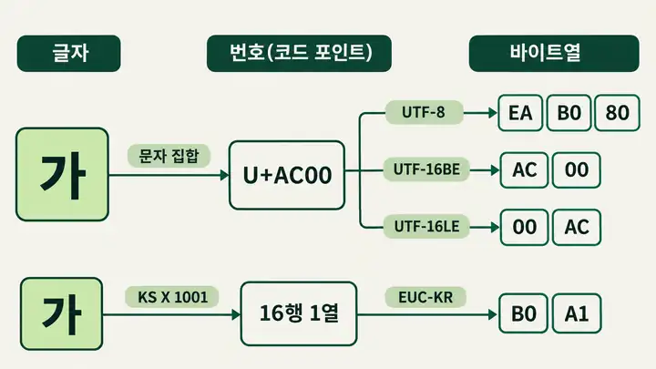
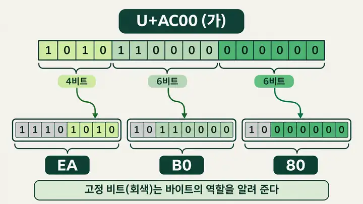
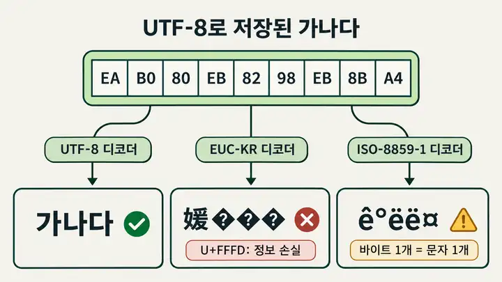
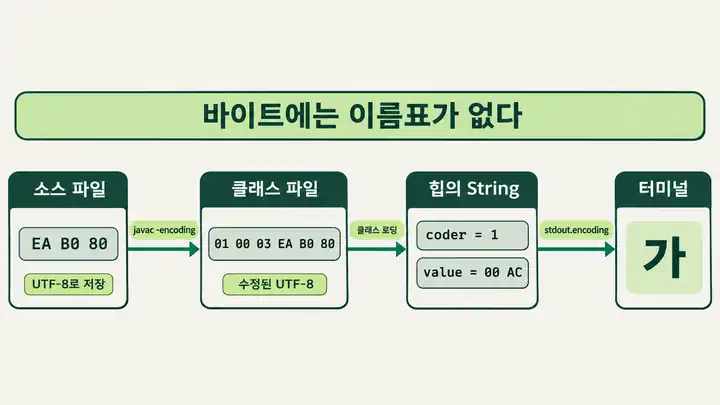

자바 고급 2편 / 01회
문자 인코딩
컴퓨터가 글자를 번호로, 번호를 바이트로 바꾸는 두 단계를 ASCII와 EUC-KR에서 유니코드·UTF-8·UTF-16까지 비트 단위로 따라가고, 자바 21에서 글자가 깨지는 순간을 직접 재현한다.
오늘 끝나면 할 수 있는 것
- 문자 집합(coded character set)과 문자 인코딩(character-encoding scheme)을 구분해서 설명하고, "유니코드는 2바이트"라는 말이 왜 틀렸는지 말할 수 있다.
- 코드 포인트가 주어지면 UTF-8과 UTF-16 바이트열을 손으로 계산할 수 있고(예: U+AC00 → EA B0 80, U+1F600 → D8 3D DE 00), 자바의
byte가 음수로 찍히는 이유를 2의 보수로 설명할 수 있다. - EUC-KR과 MS949(CP949)가 담을 수 있는 한글의 범위와 바이트 구조의 차이를 설명하고, 그 차이가 바이트 단위 처리에 어떤 함정을 만드는지 예를 들 수 있다.
CharsetAPI로 지원 문자 집합을 조회하고, 인코딩·디코딩에 서로 다른 문자 집합을 썼을 때 나오는 결과(?, U+FFFD, 엉뚱한 한자)를 바이트 수준에서 예측하고 복구 가능 여부를 판단할 수 있다.- 자바 소스의 문자열 리터럴이 javac, 클래스 파일(수정된 UTF-8), 힙의
String(Latin-1/UTF-16), 표준 출력을 거치며 몇 번 변환되는지 짚고, 각 단계의 인코딩 설정이 어디에서 오는지 말할 수 있다.
핵심 강의 → 핵심 요약 → 실무 재판단 → 적용 연습 → 이해 확인
01 핵심 강의
이 강의의 차례 · 소제목 20개
- 이 회차의 질문: 메모리에는 글자가 없다
- 실습 환경 구성: JDK 21과 기본 문자 집합 확인
- 컴퓨터와 데이터: 비트, 바이트, 그리고 해석
- 문자 집합과 인코딩: 두 번의 대응
- ASCII와 ISO-8859-1: 한 바이트의 세계
- 한글을 담는 방법 1: EUC-KR과 완성형 2,350자
- 한글을 담는 방법 2: CP949(MS949)와 확장 영역
- 유니코드: 모든 문자에 번호 하나씩
- UTF-16: 16비트 코드 유닛과 서로게이트 쌍
- UTF-8: 가변 길이와 자기 동기화
- 문자 집합 조회: Charset API
- Charset.forName의 안쪽: 조회 순서와 jdk.charsets 모듈
- 문자 인코딩 예제 1: 같은 글자, 다른 바이트
- 문자 인코딩 예제 2: 다른 문자 집합으로 읽으면
- 디코더 안쪽: 잘못된 바이트는 U+FFFD 몇 개가 되는가
- String 생성자의 지름길: 표준 문자 집합은 디코더 객체를 만들지 않는다
- 한 층 아래: 자바 프로그램 속 "가"가 거치는 네 번의 변환
- HotSpot 안쪽: ldc 한 번에 상수 풀의 바이트가 String이 되기까지
- 흔한 오해와 함정
- 정리: 바이트에는 이름표가 없다
이 회차의 질문: 메모리에는 글자가 없다
자바 코드에 String s = "가";라고 쓰고 저장하면, 디스크에 저장되는 것은 "가"라는 모양이 아니다. 파일 안에는 0과 1로 이루어진 바이트 몇 개가 있을 뿐이다. 그 파일을 javac가 읽고, 클래스 파일로 쓰고, JVM이 다시 읽어 힙에 문자열 객체를 만들고, 마지막에 System.out.println이 터미널로 바이트를 보낸다. 터미널은 그 바이트를 받아 글꼴에서 모양을 찾아 화면에 그린다. 이 긴 여정의 어느 구간에서도 "글자"라는 실체는 흐르지 않는다. 흐르는 것은 언제나 바이트이고, 각 구간의 프로그램이 "이 바이트는 이런 규칙으로 읽어야 글자가 된다"는 약속을 따를 뿐이다.
그 약속이 바로 문자 인코딩이다. 약속이 하나뿐이라면 아무 문제가 없겠지만, 현실에는 ASCII, ISO-8859-1, EUC-KR, CP949, UTF-8, UTF-16 같은 약속이 여럿 공존한다. 보내는 쪽과 받는 쪽이 서로 다른 약속을 쓰면, 바이트는 한 비트도 손상되지 않았는데 화면에는 ���나 媛나 °¡ 같은 글자가 나타난다. 이 회차 내내 반복할 문장이 하나 있다. 바이트에는 이름표가 붙어 있지 않다. 바이트열만 보고는 그것이 어떤 인코딩으로 만들어졌는지 알 수 없고, 읽는 쪽이 알고 있어야 한다.
이 권(자바 고급 2편)은 파일, 네트워크, HTTP처럼 프로그램 바깥과 바이트를 주고받는 일을 다룬다. 바깥 세계와 주고받는 것은 결국 바이트이고, 그 바이트의 상당수는 사람이 읽는 텍스트다. 그래서 첫 회차에서 텍스트가 바이트가 되는 규칙을 바닥까지 정리한다. 순서는 이렇다. 먼저 실습 환경을 갖추고 자바가 쓰는 기본 인코딩을 확인한다. 다음으로 비트와 바이트, 그리고 자바 byte의 부호 문제를 정리한다. 그다음 문자 집합과 인코딩을 구분하고, ASCII에서 EUC-KR, CP949, 유니코드와 UTF-16, UTF-8까지 차례로 비트 수준에서 해부한다. 마지막으로 Charset API로 인코딩과 디코딩을 실험하고, 자바 프로그램 안에서 문자열이 거치는 변환 단계를 JVM 내부까지 따라간다.
실습 환경 구성: JDK 21과 기본 문자 집합 확인
이 회차의 예제는 JDK 21 하나로 따라 할 수 있다. 빈 폴더에 소스 파일을 만들고 javac로 컴파일한 뒤 java로 실행한다. 본문에 실은 출력은 Apple Silicon(arm64) macOS에서 Temurin JDK 21.0.13으로 실행한 결과다. 운영체제나 로캘에 따라 달라지는 값이 있는 곳에는 그렇다고 밝힌다. IDE를 쓴다면 프로젝트의 파일 인코딩이 UTF-8인지 먼저 확인해 두자. 이 회차가 다루는 문제의 상당수는 "편집기가 저장한 인코딩"과 "컴파일러가 읽는 인코딩"이 어긋나는 데서 시작한다.
가장 먼저 확인할 것은 JVM이 지금 어떤 인코딩을 기본으로 쓰고 있는가다. 자바에는 인코딩과 관련된 시스템 프로퍼티가 여럿 있고, 각각 쓰이는 곳이 다르다. 다음 프로그램으로 한 번에 본다.
import java.nio.charset.Charset;
public class Props {
public static void main(String[] args) {
System.out.println("defaultCharset = " + Charset.defaultCharset());
System.out.println("file.encoding = " + System.getProperty("file.encoding"));
System.out.println("native.encoding = " + System.getProperty("native.encoding"));
System.out.println("stdout.encoding = " + System.getProperty("stdout.encoding"));
System.out.println("가");
}
}defaultCharset = UTF-8
file.encoding = UTF-8
native.encoding = UTF-8
stdout.encoding = UTF-8
가네 값이 모두 UTF-8이라 구분이 안 되어 보이지만, 의미는 서로 다르다. 자바 21의 System.getProperties() 문서와 Charset 문서를 기준으로 정리하면 다음과 같다.
| 이름 | 의미 | JDK 21에서 값이 정해지는 방식 |
|---|---|---|
Charset.defaultCharset() | 문자 집합을 지정하지 않은 API(getBytes(), new String(bytes), FileReader 등)가 쓰는 기본 문자 집합 | UTF-8. 구현은 명령행의 file.encoding으로 이를 바꿀 수 있다 |
file.encoding | 기본 문자 집합의 이름 | 기본값 UTF-8. 명령행에서 UTF-8 또는 COMPAT만 허용되며, 그 밖의 값은 동작이 정해져 있지 않다 |
native.encoding | 운영체제 환경(로캘)에서 얻은 인코딩 이름 | 호스트 환경이 정한다. 사용자가 설정해도 효과가 없다 |
stdout.encoding | System.out이 문자를 바이트로 바꿀 때 쓰는 인코딩 | 터미널에 연결되어 있으면 Console.charset()과 같고, 아니면 native.encoding을 따른다 |
기본 문자 집합이 어느 환경에서나 UTF-8이 된 것은 JDK 18에 들어간 JEP 400(UTF-8 by Default)부터다. 그 전까지 기본 문자 집합은 JVM이 시작할 때 운영체제의 로캘과 문자 집합에 따라 정해졌다. OpenJDK 블로그(inside.java)의 JEP 400 설명은 영어(미국) 로캘의 윈도우에서 기본값이 코드 페이지 1252였다는 예를 든다. 같은 프로그램이 개발자 PC와 리눅스 서버에서 서로 다른 바이트를 만들 수 있었다는 뜻이다. native.encoding은 JDK 17에 먼저 추가된 프로퍼티로, 기본 문자 집합이 UTF-8로 고정된 뒤에도 "운영체제가 원래 쓰는 인코딩"을 알 수 있게 해 준다. file.encoding=COMPAT을 주면 기본 문자 집합을 예전 방식, 즉 native.encoding에서 정한다.
로캘을 바꿔 실행해 보면 이 프로퍼티들이 실제로 따로 움직인다는 것을 확인할 수 있다. macOS에서 LC_ALL=C로 로캘을 C로 바꾸면 운영체제 쪽 인코딩은 US-ASCII가 된다.
$ LC_ALL=C java Props
defaultCharset = UTF-8
file.encoding = UTF-8
native.encoding = US-ASCII
stdout.encoding = US-ASCII
?
$ LC_ALL=C java -Dfile.encoding=COMPAT Props
defaultCharset = US-ASCII
file.encoding = US-ASCII
native.encoding = US-ASCII
stdout.encoding = US-ASCII
?첫 실행에서 기본 문자 집합은 여전히 UTF-8이지만, 마지막 줄의 "가"는 ?로 찍혔다. 출력을 xxd로 덤프하면 그 자리에 바이트 3F 하나가 있다. 프로그램 안의 문자열 "가"는 멀쩡했다. 문제는 System.out이 그 문자열을 US-ASCII로 바이트로 바꾸려 했고, US-ASCII에는 "가"가 없어서 대체 문자 ?를 쓴 데 있다. 두 번째 실행은 COMPAT 때문에 기본 문자 집합까지 US-ASCII가 되었다. 이처럼 "글자가 깨졌다"는 현상 하나에도, 깨진 위치가 프로그램 안인지, 출력 경계인지, 받는 쪽인지를 나눠서 봐야 한다. 현재 JVM의 프로퍼티를 한꺼번에 보고 싶으면 java -XshowSettings:properties -version을 실행하면 된다. 출력 가운데 file.encoding, native.encoding, stdout.encoding, stderr.encoding, sun.jnu.encoding 줄을 찾으면 된다.
컴파일러도 인코딩을 쓴다. javac 문서는 -encoding 옵션을 "소스 파일이 쓰는 문자 인코딩"을 지정하는 옵션으로 설명하고, 지정하지 않으면 플랫폼 기본 변환기를 쓴다고 적는다. JDK 18부터 기본 문자 집합이 UTF-8이므로 JDK 21의 javac는 옵션이 없으면 소스를 UTF-8로 읽는다. 이것이 실제로 어떤 결과를 낳는지는 뒤에서 EUC-KR로 저장한 소스를 컴파일해 확인한다. 빌드 도구를 쓰더라도 결국 javac에 이 옵션이 전달되므로, 소스 인코딩을 명시해 두는 습관(javac -encoding UTF-8, Gradle이라면 options.encoding = 'UTF-8')이 환경 차이를 없애는 가장 확실한 방법이다.
컴퓨터와 데이터: 비트, 바이트, 그리고 해석
컴퓨터의 메모리와 디스크는 결국 두 상태 가운데 하나를 갖는 칸의 모음이다. 이 칸 하나가 비트(bit)이고, 0과 1로 적는다. 비트 하나로는 두 가지를, 두 개로는 네 가지를, n개로는 2의 n제곱 가지를 구분할 수 있다. 현대 컴퓨터는 비트 8개를 묶은 바이트(byte)를 주소를 붙이는 최소 단위로 쓴다. 메모리 주소 하나가 가리키는 칸에는 바이트 하나, 즉 256(2의 8제곱)가지 값 가운데 하나가 들어 있다. 파일도, 네트워크 패킷도, 결국 이런 바이트를 순서대로 늘어놓은 것이다.
바이트를 사람이 읽을 때는 보통 16진수(hexadecimal)로 적는다. 16진수 한 자리가 정확히 4비트를 나타내므로, 바이트 하나는 16진수 두 자리로 딱 떨어진다. 예를 들어 이진수 1110 1010은 앞 네 비트가 14(E), 뒤 네 비트가 10(A)이므로 0xEA다. 이 회차에서 바이트열을 보여 줄 때는 EA B0 80처럼 16진수 두 자리씩 띄어 쓴다.
중요한 점은 바이트 자체에는 의미가 없다는 것이다. 바이트 두 개 41 42는 ASCII로 읽으면 문자열 "AB"이고, 16비트 정수(빅 엔디언)로 읽으면 16706(0x4142)이고, 어떤 이미지 형식에서는 픽셀 색의 일부다. 같은 비트 패턴이 무엇을 뜻하는지는 읽는 프로그램이 어떤 규칙을 적용하느냐로 정해진다. 문자도 마찬가지다. 컴퓨터는 "A"라는 모양을 저장할 수 없으므로, 사람들이 "A는 65번"이라고 약속하고 65를 저장한다. 문자 인코딩 이야기는 전부 이 약속의 종류와 그 약속을 어겼을 때의 결과에 관한 것이다.
자바의 byte는 부호가 있다
자바로 인코딩 결과를 찍어 보면 [-22, -80, -128]처럼 음수가 줄줄이 나온다. 처음 보면 데이터가 잘못된 것 같지만, 이것은 자바의 byte 타입이 부호 있는 정수이기 때문이다. 자바 언어 명세(JLS §4.2.1)는 byte의 범위를 -128부터 127까지로 정하고, 정수 타입은 2의 보수(two's complement) 표현을 쓴다. 8비트 2의 보수에서 맨 앞 비트가 1인 값은 "256을 뺀 값"으로 해석된다. 그래서 비트 패턴 1110 1010(부호 없이 읽으면 234)은 byte로는 234 - 256 = -22가 된다. 비트는 같고 해석만 다르다.
public class ByteView {
public static void main(String[] args) {
byte b = (byte) 0xEA; // 1110 1010
System.out.println(b); // 부호 있는 해석
System.out.println(b & 0xFF); // 부호 없는 해석
System.out.println(Byte.toUnsignedInt(b)); // 같은 일을 하는 메서드
System.out.println(Integer.toBinaryString(b & 0xFF));
System.out.println(Integer.toHexString(b)); // int로 넓혀진 뒤의 16진수
System.out.println(Integer.toHexString(b & 0xFF));
System.out.println((int) 'A' + " " + (int) 'a' + " " + (int) '가');
}
}-22
234
234
11101010
ffffffea
ea
65 97 44032한 줄씩 따라가 보자. 0xEA는 정수 리터럴이므로 int 234다. 234는 byte 범위를 넘으므로 (byte) 캐스트가 필요하고, 이 축소 변환은 하위 8비트만 남긴다. 첫 줄은 그 8비트를 부호 있는 값으로 출력해 -22다. 둘째 줄의 b & 0xFF에서는 이항 숫자 승격(binary numeric promotion) 때문에 b가 먼저 int로 넓혀진다. 이때 부호 확장이 일어나 -22는 32비트 0xFFFFFFEA가 된다. 여기에 0xFF를 AND하면 위쪽 24비트가 지워져 0x000000EA, 즉 234가 남는다. 셋째 줄의 Byte.toUnsignedInt는 Java 8에 추가된 메서드로, JDK 21 소스에서도 본문이 정확히 ((int) x) & 0xff 한 줄이다. 다섯째 줄에서 Integer.toHexString(b)가 ffffffea를 찍는 것도 같은 부호 확장 때문이다. 바이트를 16진수로 찍을 때 & 0xFF를 빠뜨리면 이렇게 앞에 f가 여섯 개 붙는다.
마지막 줄은 자바의 char가 사실 숫자라는 것을 보여 준다. 'A'는 65, 'a'는 97, '가'는 44032다. 이 숫자들이 어디서 왔는지가 다음 절부터의 주제다. 한 가지 함정만 미리 짚자. bytes[0] == 0xEA는 항상 거짓이다. 비교 전에 bytes[0]이 int -22로 넓혀지고, 오른쪽은 int 234이기 때문이다. 바이트 값을 비교하려면 bytes[0] == (byte) 0xEA나 (bytes[0] & 0xFF) == 0xEA처럼 양쪽의 해석을 맞춰야 한다.
문자 집합과 인코딩: 두 번의 대응
"문자 인코딩"이라는 말은 흔히 한 덩어리로 쓰이지만, 실제로는 두 개의 대응을 합친 것이다. 자바의 Charset 클래스 문서는 이 용어를 이렇게 나눈다. 코드화된 문자 집합(coded character set)은 추상적인 문자들의 집합과 정수들의 집합 사이의 대응이다. 문자 인코딩 방식(character-encoding scheme)은 하나 이상의 코드화된 문자 집합과 옥텟(8비트 바이트)열 사이의 대응이다. 그리고 자바에서 말하는 charset은 이 둘의 조합이다. 같은 문서는 다른 소프트웨어에서는 charset을 코드화된 문자 집합과 같은 뜻으로 쓰기도 해서 이 정의가 혼란스럽다는 점도 스스로 인정한다.
추상적인 문자 코드화된 문자 집합 인코딩 방식 바이트열
(글자의 정체) ───▶ (글자 → 번호) ───▶ (번호 → 바이트) ───▶ (저장·전송)
"가" U+AC00 (44032) UTF-8 : EA B0 80
UTF-16BE: AC 00
UTF-16LE: 00 AC
"가" KS X 1001의 16행 1열 EUC-KR : B0 A1
(한국 국가 표준 번호)
위 그림의 위쪽 줄이 핵심이다. 유니코드라는 하나의 문자 집합이 "가"에 U+AC00이라는 번호를 붙인다. 그 번호를 바이트로 적는 방법은 하나가 아니다. UTF-8은 3바이트 EA B0 80으로, UTF-16은 2바이트 AC 00(또는 바이트 순서를 바꾼 00 AC)으로 적는다. 그러니 "유니코드에서 한글은 몇 바이트인가"라는 질문은 성립하지 않는다. 유니코드는 번호를 정할 뿐이고 바이트 수는 인코딩이 정한다. 반면 ASCII나 EUC-KR 같은 오래된 체계에서는 번호와 바이트가 거의 그대로 대응해서 두 단계를 굳이 구분할 필요가 없었다. 유니코드에 와서야 이 구분이 실질적인 의미를 갖게 된다.

ASCII와 ISO-8859-1: 한 바이트의 세계
가장 오래되고 지금도 모든 인코딩의 바닥에 깔려 있는 것이 ASCII(American Standard Code for Information Interchange)다. ASCII는 7비트, 즉 0부터 127까지 128개의 번호를 쓴다. 0부터 31까지와 127은 줄바꿈(LF, 10), 캐리지 리턴(CR, 13), 탭(9) 같은 제어 문자이고, 32(공백)부터 126(~)까지 95개가 화면에 찍히는 문자다. 자바의 Charset 문서는 US-ASCII를 "7비트 ASCII, 유니코드 문자 집합의 Basic Latin 블록"이라고 설명한다. 유니코드의 첫 128개 번호가 ASCII와 똑같이 정해져 있다는 뜻이다.
| 문자 | 10진수 | 16진수 | 2진수 |
|---|---|---|---|
| 공백 | 32 | 0x20 | 0010 0000 |
0 | 48 | 0x30 | 0011 0000 |
9 | 57 | 0x39 | 0011 1001 |
A | 65 | 0x41 | 0100 0001 |
a | 97 | 0x61 | 0110 0001 |
표를 보면 ASCII 배치에 설계 의도가 있다는 것을 알 수 있다. 숫자 0~9는 0x30~0x39로 연속해 있어서, 자바에서 c - '0'으로 숫자 문자를 정숫값으로 바꾸는 관용구가 성립한다. 대문자 A(0100 0001)와 소문자 a(0110 0001)는 정확히 한 비트(0x20)만 다르다. 대소문자 변환이 비트 하나를 켜고 끄는 일이 되도록 배치한 것이다. 이 규칙은 ASCII 범위에서만 성립한다. 자바의 Character.toUpperCase는 유니코드 전체에 대해 정의된 대소문자 매핑을 따른다.
ASCII는 7비트이므로 바이트 하나의 맨 앞 비트가 남는다. 128부터 255까지를 어떻게 쓸지를 두고 수많은 8비트 확장이 생겼고, 그 가운데 서유럽 언어용으로 널리 쓰인 것이 ISO-8859-1(Latin-1)이다. ISO-8859-1은 0x00~0x7F를 ASCII와 똑같이 두고, 0xA0~0xFF에 é, ü, ñ, ° 같은 문자를 넣었다(0x80~0x9F는 제어 문자 영역이다). 유니코드의 U+0000~U+00FF는 ISO-8859-1과 같은 순서로 배치되어 있어서, 자바의 ISO-8859-1 디코더는 바이트 값 n을 그대로 코드 포인트 U+00nn인 문자로 바꾼다. 바이트 256종류와 문자 256개가 정확히 일대일로 대응한다는 이 성질은 뒤에서 "깨진 문자열의 복구"를 설명할 때 결정적인 역할을 한다.
한 바이트 체계에는 한글이 들어갈 자리가 없다. 실제로 자바에서 "가".getBytes(StandardCharsets.US_ASCII)나 ISO-8859-1로 바꾸면 결과는 바이트 하나 3F, 즉 물음표다. 한글을 표현할 수 없으니 대체 문자를 넣은 것이다. 이 동작의 근거는 뒤의 예제에서 Javadoc과 함께 확인한다.
한글을 담는 방법 1: EUC-KR과 완성형 2,350자
256칸으로 부족하다면 바이트 두 개를 묶어 한 글자를 나타내면 된다. 한국의 국가 표준 KS X 1001(예전 이름 KS C 5601)은 이런 2바이트 문자 집합으로, 94×94 크기의 표에 한글, 한자, 기호를 배치했다. 한글은 이 표에 미리 완성된 음절 2,350자를 골라 넣는 완성형 방식을 택했다. EUC-KR은 이 KS X 1001의 글자를 ASCII와 함께 쓰기 위한 인코딩이다. ASCII 문자는 원래대로 1바이트(0x00~0x7F)로 두고, KS X 1001의 글자는 두 바이트 모두 0xA1~0xFE 범위에 오도록 적는다. 예를 들어 "가"는 B0 A1이다.
이 설계에서 중요한 성질이 하나 나온다. EUC-KR에서 한글 바이트는 모두 0x80 이상이므로, 0x7F 이하의 바이트는 언제나 ASCII 문자 그 자체다. 바이트열에서 0x0A(줄바꿈)나 0x2C(쉼표)를 찾으면 그것은 반드시 진짜 줄바꿈이나 쉼표이고, 한글 글자의 한쪽 절반일 가능성이 없다. 영문 위주로 짜인 기존 프로그램이 EUC-KR 텍스트를 받아도 구분자 처리 정도는 깨지지 않는 이유다.
문제는 2,350자라는 숫자다. 현대 한글은 초성 19개, 중성 21개, 종성 28개(종성 없음 포함)의 조합이므로 가능한 음절은 19×21×28 = 11,172자다. 완성형 2,350자는 그 가운데 자주 쓰이는 것만 고른 것이어서, "똠", "뷁", "햏" 같은 음절은 표현할 수 없다. 자바로 직접 세어 보자. 유니코드의 한글 음절 영역(U+AC00~U+D7A3) 11,172자를 하나씩 EUC-KR 인코더에 넣어 보면 된다.
import java.nio.charset.Charset;
import java.util.HexFormat;
public class Unmappable {
public static void main(String[] args) {
HexFormat hex = HexFormat.ofDelimiter(" ").withUpperCase();
Charset eucKr = Charset.forName("EUC-KR");
Charset ms949 = Charset.forName("MS949");
System.out.println(hex.formatHex("똠".getBytes(eucKr)));
System.out.println(hex.formatHex("똠".getBytes(ms949)));
System.out.println(hex.formatHex("😀".getBytes(ms949)));
System.out.println(hex.formatHex("A가".getBytes(Charset.forName("ISO-8859-1"))));
int euc = 0, ms = 0;
for (char c = '가'; c <= '힣'; c++) { // 유니코드의 한글 음절 전체
if (eucKr.newEncoder().canEncode(c)) euc++;
if (ms949.newEncoder().canEncode(c)) ms++;
}
System.out.println("EUC-KR = " + euc + ", MS949 = " + ms);
}
}3F
8C 63
3F
41 3F
EUC-KR = 2350, MS949 = 11172HexFormat은 Java 17에 추가된 클래스로, 바이트 배열을 16진수 문자열로 바꿔 준다. 앞에서 본 & 0xFF 처리를 대신 해 주므로 이 회차에서는 계속 이것을 쓴다. 결과를 보면 EUC-KR이 인코딩할 수 있는 한글 음절은 정확히 2,350자다. 이 2,350자의 바이트 범위를 따로 조사해 보면 첫 바이트는 0xB0~0xC8(25가지), 둘째 바이트는 0xA1~0xFE(94가지)로, 25×94 = 2,350이 꽉 찬다. KS X 1001 표에서 한글이 16행부터 40행까지 25개 행을 차지하고, EUC-KR이 행 번호와 열 번호에 각각 0xA0을 더해 바이트로 만들기 때문이다. "가"는 16행 1열이므로 0xA0+16 = 0xB0, 0xA0+1 = 0xA1, 즉 B0 A1이다. "똠"은 표에 없으므로 3F가 되었다.
한글을 담는 방법 2: CP949(MS949)와 확장 영역
나머지 8,822자(11,172 - 2,350)를 담기 위해 마이크로소프트는 EUC-KR을 확장한 코드 페이지 949(CP949, 통합형 한글 코드)를 윈도우에 넣었다. 자바에서는 정식 이름이 x-windows-949이고 MS949, windows-949 같은 별칭으로도 찾을 수 있다. CP949는 EUC-KR의 상위 집합이다. EUC-KR에 있는 글자는 바이트까지 똑같이 쓰고("가"는 두 인코딩 모두 B0 A1), EUC-KR이 쓰지 않던 바이트 조합에 나머지 한글을 채워 넣었다. 위 실행 결과에서 MS949가 11,172자를 모두 인코딩한 것이 그 증거다.
그런데 채워 넣을 빈 자리를 찾다 보니 EUC-KR이 지키던 성질 하나를 포기했다. 같은 방법으로 MS949의 한글 11,172자의 바이트 범위를 조사하면, 첫 바이트는 0x81~0xC8, 둘째 바이트는 0x41~0x5A, 0x61~0x7A, 0x81~0xFE 범위에 걸친다. 둘째 바이트에 0x41~0x5A와 0x61~0x7A, 즉 ASCII의 영문 대문자와 소문자 범위가 들어간다. 실제로 "똠"은 8C 63으로 인코딩되었고, 0x63은 ASCII로 소문자 c다. CP949 바이트열에서 0x63을 찾았다고 해서 그것이 문자 c라고 단정할 수 없다는 뜻이다. 바이트 단위로 "c"를 검색하는 코드는 "똠"의 뒷절반에 걸려 잘못된 위치를 돌려줄 수 있다. 바이트열을 올바르게 나누려면 앞에서부터 첫 바이트를 보고 글자 경계를 따라가야 한다.
EUC-KR "A가" : 41 | B0 A1 0x80 미만 바이트는 언제나 ASCII
MS949 "A똠" : 41 | 8C 63 63('c')이 한글의 둘째 바이트로 쓰였다
^^
바이트만 보고 'c'로 오해할 수 있는 자리
한 가지 결과가 더 있다. 확장 영역의 글자는 기존 2,350자 사이에 끼어들 수 없어서 바이트 공간의 앞쪽(0x81~0xA0 등)에 몰려 배치되었다. 예를 들어 "갂"(U+AC02)은 MS949로 81 41이고 "가"는 B0 A1이다. 가나다순으로는 "가" 다음이 "갂"인데, 바이트를 부호 없이 사전순 비교하면 "갂"이 "가"보다 앞선다(Arrays.compareUnsigned로 비교하면 음수가 나온다). CP949 바이트열을 그대로 정렬하면 한글 사전 순서가 나오지 않는다.
EUC-KR과 CP949 모두 한국어용 체계라는 한계도 있다. 이모지나 아랍 문자처럼 표에 없는 글자는 아예 담을 수 없다. 위 실행 결과의 셋째 줄에서 "😀"를 MS949로 바꾸자 바이트 하나 3F가 나왔다. 자바 문자열에서 "😀"는 char 두 개로 되어 있는데(뒤에서 설명할 서로게이트 쌍이다), 인코더가 이 쌍을 한 글자로 인식해 물음표 하나로 바꾼 것이다. 여러 언어를 한 문서에 담으려면 언어마다 다른 문자 집합을 쓰는 방식을 버리고, 세상의 모든 문자에 하나의 번호표를 주는 체계가 필요했다. 그것이 유니코드다.
유니코드: 모든 문자에 번호 하나씩
유니코드(Unicode)는 세계의 문자에 하나씩 번호를 붙이는 문자 집합이다. 이 번호를 코드 포인트(code point)라고 하고, U+ 뒤에 16진수 네 자리 이상을 붙여 적는다. "A"는 U+0041, "é"는 U+00E9, "가"는 U+AC00, "😀"는 U+1F600이다. 코드 포인트의 범위는 U+0000부터 U+10FFFF까지 1,114,112개이고, 자바에서도 Character.MAX_CODE_POINT가 0x10FFFF다. 이 공간은 65,536개씩 17개의 평면(plane)으로 나뉜다. 0번 평면(U+0000~U+FFFF)을 기본 다국어 평면(BMP, Basic Multilingual Plane)이라 하고, 그 밖의 문자를 보충 문자(supplementary character)라 한다. 한글 음절과 대부분의 한자, 라틴 문자는 BMP에 있고, 이모지 상당수와 옛 문자들은 보충 평면에 있다.
유니코드는 한글 음절 11,172자를 모두 U+AC00(가)부터 U+D7A3(힣)까지 가나다순으로 연속 배치했다. 유니코드 표준 3.12절(Conjoining Jamo Behavior)은 초성 인덱스 L(0~18), 중성 인덱스 V(0~20), 종성 인덱스 T(0~27, 받침 없음이 0)로 음절의 코드 포인트를 계산하는 식을 정의한다.
코드 포인트 = 0xAC00 + (L × 21 + V) × 28 + T
"가" = ㄱ(L=0) + ㅏ(V=0) + 받침 없음(T=0)
= 0xAC00 + (0 × 21 + 0) × 28 + 0 = 0xAC00
"한" = ㅎ(L=18) + ㅏ(V=0) + ㄴ(T=4)
= 44032 + (18 × 21 + 0) × 28 + 4
= 44032 + 10584 + 4 = 54620 = 0xD55C
자바로 Integer.toHexString('한')을 찍으면 실제로 d55c가 나온다. 이 규칙성 덕분에 유니코드 한글은 산술만으로 초성·중성·종성을 분해하고 조합할 수 있고, 코드 포인트 순서가 곧 가나다순이다. CP949의 확장 영역이 가나다순을 지키지 못했던 것과 대조적이다. Character.getName(0xAC00)은 HANGUL SYLLABLES AC00을 돌려준다. 이것은 유니코드 표준이 정한 이 글자의 이름(HANGUL SYLLABLE GA)이 아니다. getName의 Javadoc에 따르면 UnicodeData 파일에 개별 이름이 실려 있지 않은 한글 음절 같은 코드 포인트에 대해서는 유니코드 블록 이름과 16진수 코드 포인트를 이어 붙인 문자열을 돌려주며, 이 규칙은 유니코드 표준의 이름 규칙과 다르다고 문서 스스로 밝힌다.
코드 포인트 공간 가운데 U+D800~U+DFFF의 2,048개는 어떤 문자에도 배정되지 않는다. 이 구간은 서로게이트(surrogate)라 불리며, 바로 다음에 볼 UTF-16이 보충 문자를 표현하기 위해 예약해 둔 자리다. 그리고 다시 강조하지만 유니코드는 번호만 정한다. 1,114,112개의 번호를 바이트로 적는 방법으로 UTF-8, UTF-16, UTF-32가 정의되어 있다. UTF-32는 모든 코드 포인트를 4바이트로 고정해 적는 단순한 방식이지만 공간 낭비가 커서 저장·전송용으로는 드물게 쓰인다. 실무에서 만나는 것은 거의 UTF-8과 UTF-16이다.
UTF-16: 16비트 코드 유닛과 서로게이트 쌍
UTF-16은 16비트 단위, 즉 코드 유닛(code unit) 하나가 2바이트인 인코딩이다. BMP 문자는 코드 포인트 값을 그대로 16비트 코드 유닛 하나로 적는다. "A"(U+0041)는 0x0041, "가"(U+AC00)는 0xAC00이다. 문제는 16비트로 표현할 수 없는 보충 문자다. UTF-16은 이들을 서로게이트 구간의 코드 유닛 두 개, 즉 서로게이트 쌍(surrogate pair)으로 적는다. 앞에 오는 상위 서로게이트(high surrogate)는 0xD800~0xDBFF, 뒤에 오는 하위 서로게이트(low surrogate)는 0xDC00~0xDFFF 범위다. 이 두 범위에는 문자가 배정되지 않으므로, 코드 유닛 하나만 보고도 그것이 단독 문자인지, 쌍의 앞쪽인지 뒤쪽인지 판별할 수 있다.
"😀"(U+1F600)를 직접 계산해 보자.
- 0x10000을 뺀다0x1F600 - 0x10000 = 0x0F600. 보충 문자는 U+10000~U+10FFFF이므로 빼고 나면 0x00000~0xFFFFF, 정확히 20비트에 들어간다.
- 20비트를 반으로 나눈다0x0F600 = 0000 1111 0110 0000 0000. 상위 10비트 0000111101 = 0x3D, 하위 10비트 1000000000 = 0x200.
- 각각 서로게이트 시작값에 더한다상위: 0xD800 + 0x3D = 0xD83D. 하위: 0xDC00 + 0x200 = 0xDE00.
- 바이트로 적는다빅 엔디언이면 D8 3D DE 00, 리틀 엔디언이면 3D D8 00 DE. BMP 문자는 2바이트, 보충 문자는 4바이트가 된다.
16비트 값을 바이트 두 개로 적을 때는 순서를 정해야 한다. 큰 쪽 바이트를 먼저 쓰는 빅 엔디언(big-endian, UTF-16BE)과 작은 쪽을 먼저 쓰는 리틀 엔디언(little-endian, UTF-16LE)이 모두 쓰인다. 어느 쪽인지 알리기 위해 데이터 맨 앞에 U+FEFF를 넣는 관례가 있는데, 이를 바이트 순서 표시(BOM, byte-order mark)라 한다. 빅 엔디언이면 FE FF, 리틀 엔디언이면 FF FE로 보이므로 읽는 쪽이 순서를 판별할 수 있다. 자바의 Charset 문서는 세 문자 집합의 동작을 명확히 정해 두었다. UTF-16은 디코딩할 때 맨 앞의 BOM으로 바이트 순서를 판단하고 BOM이 없으면 빅 엔디언으로 간주하며, 인코딩할 때는 빅 엔디언으로 쓰고 빅 엔디언 BOM을 붙인다. UTF-16BE와 UTF-16LE는 인코딩할 때 BOM을 쓰지 않고, 디코딩할 때 맨 앞의 BOM을 폭 없는 줄바꿈 금지 공백(ZERO WIDTH NO-BREAK SPACE) 문자로 해석한다.
자바의 char는 UTF-16 코드 유닛이다
이 절이 자바 개발자에게 특히 중요한 이유는 자바 언어 자체가 UTF-16 위에 서 있기 때문이다. JLS §3.1은 자바가 텍스트를 UTF-16 인코딩의 16비트 코드 유닛 열로 표현한다고 정하고, char 타입은 0부터 65535까지의 부호 없는 16비트 정수다. 즉 char 하나는 "글자 하나"가 아니라 "UTF-16 코드 유닛 하나"다. BMP 문자에서는 둘이 같아서 차이가 드러나지 않을 뿐이다. String.length()의 Javadoc도 길이가 문자열 안의 유니코드 코드 유닛 개수라고 적고 있다.
public class CodeUnits {
public static void main(String[] args) {
String s = "a가😀";
System.out.println(s.length()); // char(코드 유닛) 수
System.out.println(s.codePointCount(0, s.length())); // 코드 포인트 수
for (char c : s.toCharArray()) {
System.out.print(Integer.toHexString(c) + " ");
}
System.out.println();
s.codePoints().forEach(cp -> System.out.print(Integer.toHexString(cp) + " "));
System.out.println();
System.out.println(Character.isHighSurrogate(s.charAt(2)));
System.out.println(Character.toCodePoint(s.charAt(2), s.charAt(3)) == 0x1F600);
System.out.println(Character.getName(0xAC00));
String broken = s.substring(0, 3); // 서로게이트 쌍의 앞 절반에서 자른다
System.out.println(broken.getBytes(java.nio.charset.StandardCharsets.UTF_8).length);
}
}4
3
61 ac00 d83d de00
61 ac00 1f600
true
true
HANGUL SYLLABLES AC00
5눈에 보이는 글자는 세 개인데 length()는 4다. "😀"가 코드 유닛 두 개(d83d de00)를 차지하기 때문이다. codePointCount와 codePoints()는 서로게이트 쌍을 하나로 합쳐 코드 포인트 단위로 센다. 마지막 두 줄이 실무의 함정이다. substring(0, 3)은 코드 유닛 인덱스로 자르므로 "a", "가", 그리고 짝 잃은 상위 서로게이트 \uD83D가 남는다. 이것을 UTF-8로 인코딩하면 "a"(1바이트) + "가"(3바이트) + 대체 문자 ?(1바이트)로 5바이트가 된다. 홀로 남은 서로게이트는 어떤 문자도 아니므로 UTF-8로 표현할 수 없고, 이모지 하나가 물음표로 바뀌어 저장된다. 문자열을 길이 제한에 맞춰 자르는 코드가 이모지를 쪼개는 전형적인 경로다. StringBuilder.reverse()처럼 서로게이트 쌍을 고려하도록 문서화된 메서드도 있지만, 인덱스를 직접 다루는 코드에서는 개발자가 Character.isHighSurrogate 같은 메서드로 경계를 확인해야 한다.
UTF-8: 가변 길이와 자기 동기화
UTF-8은 코드 포인트를 1~4바이트로 적는 가변 길이 인코딩이다. RFC 3629가 정의하며, 코드 포인트 범위에 따라 다음 네 가지 틀 가운데 하나를 쓴다. x 자리에 코드 포인트의 비트를 오른쪽부터 채워 넣는다.
코드 포인트 범위 바이트 수 비트 틀 채울 비트 수 U+0000 ~ U+007F 1 0xxxxxxx 7 U+0080 ~ U+07FF 2 110xxxxx 10xxxxxx 11 U+0800 ~ U+FFFF 3 1110xxxx 10xxxxxx 10xxxxxx 16 U+10000 ~ U+10FFFF 4 11110xxx 10xxxxxx 10xxxxxx 10xxxxxx 21
"가"(U+AC00)는 세 번째 줄 범위에 속하므로 3바이트다. 0xAC00을 16비트 이진수로 쓰면 1010 1100 0000 0000이고, 이것을 4비트, 6비트, 6비트로 나누면 1010 | 110000 | 000000이다. 틀에 채우면 1110 1010, 10 110000, 10 000000, 즉 EA B0 80이다. 자바의 byte로 찍으면 -22, -80, -128이 된다. 앞에서 본 그 음수들이다.
"😀"(U+1F600)는 네 번째 줄 범위다. 0x1F600을 21비트로 쓰면 0 0001 1111 0110 0000 0000이고, 3비트, 6비트, 6비트, 6비트로 나누면 000 | 011111 | 011000 | 000000이다. 틀에 채우면 11110 000, 10 011111, 10 011000, 10 000000, 즉 F0 9F 98 80이다. UTF-16에서 서로게이트 쌍 4바이트였던 글자가 UTF-8에서도 4바이트가 되었지만, 바이트의 모양은 전혀 다르다.

이 틀에는 우연이 아닌 설계가 담겨 있다. RFC 3629가 서두에서 꼽는 성질을 자바 개발자의 관점에서 풀어 보면 다음과 같다.
- ASCII 호환. U+0000~U+007F는 ASCII 값 그대로 1바이트로 적힌다. 순수 ASCII 텍스트 파일은 그 자체로 올바른 UTF-8 파일이다.
- ASCII 바이트는 다른 글자 안에 나타나지 않는다. 2바이트 이상인 글자의 모든 바이트는 맨 앞 비트가 1, 즉 0x80 이상이다. RFC 3629의 표현으로는 US-ASCII 바이트 값은 UTF-8 스트림에서 그 문자 자신으로만 나타난다. CP949에서 "똠"의 둘째 바이트가
c와 같았던 문제가 UTF-8에서는 생길 수 없다. 바이트 단위로/나 줄바꿈을 찾아 나누는 코드가 UTF-8에서는 안전하다. - 첫 바이트가 길이를 알려 준다.
0으로 시작하면 1바이트,110이면 2바이트,1110이면 3바이트,11110이면 4바이트 글자의 시작이다. - 자기 동기화(self-synchronizing). 이어지는 바이트는 모두
10으로 시작하고, 이 패턴은 첫 바이트에는 쓰이지 않는다. 그래서 바이트열의 아무 위치에서 읽기 시작해도,10으로 시작하는 바이트를 최대 세 개 건너뛰면 다음 글자의 시작을 찾을 수 있다. RFC 3629는 이를 "글자 경계를 옥텟 스트림의 어느 위치에서든 쉽게 찾을 수 있다"고 표현한다. - 정렬 순서 보존. UTF-8 바이트열을 바이트 값의 사전순으로 정렬하면 코드 포인트 순서로 정렬한 것과 같다. 한글은 코드 포인트 순서가 가나다순이므로, UTF-8 바이트 비교로도 가나다순이 나온다. 앞의 "갂"과 "가"를 UTF-8 바이트로 비교하면 "가"가 앞선다.
규칙이 엄격한 만큼 "틀린 UTF-8"도 명확히 정의된다. RFC 3629에 따르면 바이트 0xC0, 0xC1, 0xF5~0xFF는 올바른 UTF-8에 절대 나타나지 않는다. 0xC0과 0xC1이 금지되는 이유는 이것으로 시작하는 2바이트 열은 7비트에 들어가는 값, 즉 1바이트로 적어야 할 값을 굳이 2바이트로 적은 과잉 표현(overlong encoding)이 되기 때문이다. RFC는 디코더가 이런 잘못된 열을 받아들이지 않도록 보호해야 한다고 요구하며, 단순한 디코더가 C0 80을 U+0000으로 해석하는 경우를 예로 든다. 과잉 표현을 허용하면 같은 문자에 여러 바이트 표현이 생기고, 바이트 단위로 특정 문자를 걸러 내는 검사를 우회할 수 있기 때문이다. 서로게이트 구간 U+D800~U+DFFF를 UTF-8로 인코딩하는 것도 금지다. JDK 21의 UTF-8 디코더에 C0 80을 주면 실제로 U+FFFD 두 개가 나오고, 서로게이트를 적은 ED A0 80도 U+FFFD로 바뀐다.
세 인코딩으로 같은 글자를 적을 때의 크기를 비교하면 다음과 같다. 모두 JDK 21로 확인한 값이다.
| 글자 | 코드 포인트 | UTF-8 | UTF-16BE | EUC-KR |
|---|---|---|---|---|
| A | U+0041 | 41 (1바이트) | 00 41 (2바이트) | 41 (1바이트) |
| é | U+00E9 | C3 A9 (2바이트) | 00 E9 (2바이트) | 표현 불가 |
| 가 | U+AC00 | EA B0 80 (3바이트) | AC 00 (2바이트) | B0 A1 (2바이트) |
| 한 | U+D55C | ED 95 9C (3바이트) | D5 5C (2바이트) | C7 D1 (2바이트) |
| 😀 | U+1F600 | F0 9F 98 80 (4바이트) | D8 3D DE 00 (4바이트) | 표현 불가 |
한글만 놓고 보면 UTF-8이 EUC-KR이나 UTF-16보다 1.5배 크다. 그럼에도 UTF-8이 파일, 네트워크, 웹의 표준이 된 이유는 위의 성질들, 특히 ASCII 호환성과 바이트 순서 문제가 없다는 점 때문이다. UTF-8은 바이트 단위 인코딩이어서 엔디언을 따질 필요가 없다. 그래서 UTF-8에는 BOM이 필요 없지만, 일부 편집기는 파일 맨 앞에 U+FEFF를 UTF-8로 적은 EF BB BF를 붙이기도 한다. RFC 3629는 UTF-8에서 BOM이 쓰이면 항상 이 세 바이트로 나타난다고 적고 있다. 자바의 UTF-8 디코더는 이 세 바이트를 걸러 주지 않는다는 점을 기억해 두자. 이 문제는 뒤의 함정 절에서 실험으로 확인한다.
문자 집합 조회: Charset API
자바에서 문자 집합은 java.nio.charset.Charset 객체로 표현된다. 이 객체는 이름과 별칭을 갖고, 문자를 바이트로 바꾸는 인코더(CharsetEncoder)와 바이트를 문자로 바꾸는 디코더(CharsetDecoder)를 만들어 준다. String.getBytes(Charset)나 new String(byte[], Charset)은 내부에서 이 인코더와 디코더를 쓴다. 지금 JVM이 지원하는 문자 집합을 조회해 보자.
import java.nio.charset.Charset;
import java.util.SortedMap;
public class CharsetList {
public static void main(String[] args) {
SortedMap<String, Charset> all = Charset.availableCharsets();
System.out.println("지원하는 문자 집합 수 = " + all.size());
System.out.println("기본 문자 집합 = " + Charset.defaultCharset());
Charset ms949 = Charset.forName("MS949");
System.out.println(ms949.name() + " " + ms949.aliases());
Charset eucKr = Charset.forName("euc-kr"); // 대소문자를 구분하지 않는다
System.out.println(eucKr.name() + " " + eucKr.aliases());
System.out.println(Charset.isSupported("x-windows-949"));
System.out.println(Charset.forName("x-windows-949") == ms949);
}
}지원하는 문자 집합 수 = 173
기본 문자 집합 = UTF-8
x-windows-949 [ms_949, ms949, windows949, windows-949]
EUC-KR [euckr, euc_kr, ks_c_5601-1987, csEUCKR, ksc5601-1987, ksc_5601, ksc5601, ksc5601_1987, 5601]
true
trueavailableCharsets()는 정식 이름을 키로 하는 정렬된 맵을 돌려준다. 173이라는 숫자는 이 JDK 빌드에서 얻은 값이며 JDK 구현과 버전에 따라 다르다. 확실하게 보장되는 것은 Charset 문서가 정한 표준 문자 집합 여섯 개뿐이다. US-ASCII, ISO-8859-1, UTF-8, UTF-16BE, UTF-16LE, UTF-16은 모든 자바 플랫폼 구현이 지원해야 하고, 이 여섯 개는 StandardCharsets 클래스에 상수로 들어 있다. EUC-KR이나 MS949는 보장 목록에 없으므로 forName으로 찾아야 한다. 이 회차의 예제는 JDK 21에서 둘 다 지원되는 것을 확인하고 쓴 것이다.
forName("MS949")로 찾은 객체의 정식 이름은 x-windows-949이고, MS949는 별칭이다. 별칭으로 찾든 정식 이름으로 찾든 같은 객체가 나오는 것도 확인할 수 있다(== 비교가 참이다). Charset 문서에 따르면 문자 집합 이름은 영문자, 숫자, 그리고 -, +, ., :, _만으로 이루어지고, 영문자나 숫자로 시작해야 하며, 비교할 때 대소문자를 구분하지 않는다. 그래서 "euc-kr"로도 EUC-KR을 찾을 수 있다. 출력의 aliases()는 Set이므로 순서에 의미가 없고, 실제로 실행할 때마다 순서가 바뀌기도 했다.
찾을 수 없을 때의 예외는 두 종류다. 이름 규칙에는 맞지만 이 JVM이 지원하지 않으면 UnsupportedCharsetException이 난다(Charset.forName("NO-SUCH-CHARSET")). 이름 자체가 규칙을 어기면 IllegalCharsetNameException이 난다(Charset.forName("한글")은 허용되지 않는 문자로 이루어져 있다). 둘 다 비검사 예외다. 반면 문자열 이름을 받는 옛 API인 "가".getBytes("NO-SUCH")나 new String(bytes, "UTF-8")은 검사 예외 UnsupportedEncodingException을 선언한다. Charset 객체를 받는 오버로드는 검사 예외를 선언하지 않고, StandardCharsets.UTF_8처럼 이미 만들어진 객체를 넘기면 이름을 찾다 실패할 일 자체가 없으므로 이쪽이 더 낫다. 미리 지원 여부만 확인하려면 Charset.isSupported(name)을 쓴다.
Charset.forName의 안쪽: 조회 순서와 jdk.charsets 모듈
앞의 실행 결과에서 지원 문자 집합 수가 173이었고, 이 숫자는 구현마다 다르다고 했다. 무엇이 이 숫자를 정하는지는 JDK 21의 Charset 소스를 따라가 보면 드러난다. forName은 내부의 lookup 메서드를 부르고, 이 메서드는 먼저 가장 최근에 돌려준 결과 두 개를 기억하는 아주 작은 캐시(cache1, cache2)를 본다. 캐시 한 칸은 "찾을 때 쓴 이름"과 Charset 객체의 쌍이고, 두 번째 칸에서 찾으면 두 칸을 맞바꿔 방금 쓴 것을 첫 칸으로 올린다. 같은 이름으로 거듭 찾는 흔한 경우를 해시 맵 없이 문자열 비교 한두 번으로 끝내려는 구조다. 캐시의 키가 정식 이름이 아니라 호출할 때 넘긴 문자열이라는 점도 소스에서 읽을 수 있다. "ms949"와 "MS949"는 캐시에서 서로 다른 키다.
캐시에 없으면 lookup2가 세 곳에 차례로 묻고, 처음 찾은 결과를 캐시에 넣어 돌려준다.
- 표준 제공자.
java.base모듈 안의sun.nio.cs.StandardCharsets다. UTF-8의 구현 클래스sun.nio.cs.UTF_8도java.base에 있다. - 확장 제공자.
ServiceLoader.loadInstalled(CharsetProvider.class)로 찾은 제공자들이다.loadInstalled는 플랫폼 클래스 로더가 볼 수 있는 제공자, 즉 런타임에 설치된 JDK 모듈이 제공하는 것만 찾는다. 이 목록은ExtendedProviderHolder라는 중첩 클래스의 정적 필드에 담겨, 처음 필요할 때 한 번만 만들어진다. - 애플리케이션 제공자. 시스템 클래스 로더로
ServiceLoader.load해서 찾은CharsetProvider다. 애플리케이션이 직접 만든 문자 집합을 끼워 넣는 확장점이다.
이 회차 내내 써 온 EUC-KR과 MS949는 1번이 아니라 2번에서 나온다. JDK 21 소스에서 두 문자 집합의 클래스는 jdk.charsets 모듈의 sun.nio.cs.ext.EUC_KR와 sun.nio.cs.ext.MS949이고, 이 모듈의 module-info.java는 provides java.nio.charset.spi.CharsetProvider with sun.nio.cs.ext.ExtendedCharsets 선언 하나가 전부다. 실행 중에 Charset.forName("EUC-KR").getClass().getModule()을 찍어도 module jdk.charsets가 나온다. 그렇다면 jdk.charsets 모듈이 없는 런타임에서는 어떻게 될까. java --limit-modules java.base는 관찰 가능한 모듈을 java.base(와 그 의존 모듈)로 제한하는 옵션이다.
import java.nio.charset.Charset;
public class Mods {
public static void main(String[] args) {
System.out.println("count = " + Charset.availableCharsets().size());
System.out.println("jdk.charsets present = "
+ ModuleLayer.boot().findModule("jdk.charsets").isPresent());
for (String name : new String[]{"UTF-8", "EUC-KR", "MS949"}) {
try {
System.out.println(name + " -> " + Charset.forName(name));
} catch (Exception e) {
System.out.println(name + " -> " + e);
}
}
}
}$ java Mods
count = 173
jdk.charsets present = true
UTF-8 -> UTF-8
EUC-KR -> EUC-KR
MS949 -> x-windows-949
$ java --limit-modules java.base Mods
count = 41
jdk.charsets present = false
UTF-8 -> UTF-8
EUC-KR -> java.nio.charset.UnsupportedCharsetException: EUC-KR
MS949 -> java.nio.charset.UnsupportedCharsetException: MS949모듈을 제한하자 지원 문자 집합이 173개에서 41개로 줄었고, EUC-KR과 MS949는 UnsupportedCharsetException을 던졌다. 실제 배포에서 이 상황은 jlink로 런타임 이미지를 줄일 때 생긴다. jlink 문서에 따르면 --add-modules는 루트 모듈을 더하는 옵션이고(기본 루트 집합은 비어 있다), 서비스 제공자 모듈과 그 의존 모듈을 링크하는 것은 --bind-services 옵션의 일이다. JDK 21에서 jdk.charsets를 requires하는 모듈은 하나도 없다(java --describe-module로 모든 모듈을 훑어 확인했다). 순수한 제공자 모듈이라서 의존 관계만 따라가는 링크에는 끌려 들어오지 않는다. 이 실험 환경에서 jlink --add-modules java.base로 만든 이미지(약 48MB)로 같은 프로그램을 돌리면 위의 두 번째 실행과 똑같이 41개와 EUC-KR 예외가 나왔고, --add-modules java.base,jdk.charsets로 다시 만들자 173개로 돌아왔다. 개발 PC의 전체 JDK에서 잘 돌던 레거시 연동 코드가 작게 줄인 런타임 이미지에서 UnsupportedCharsetException을 던지는 경로가 이것이다. Charset 문서가 모든 구현에 지원을 요구하는 것은 표준 여섯 개뿐이라는 앞 절의 이야기가, 같은 JDK 안에서도 모듈 구성에 따라 현실이 된다.
EUC-KR 클래스 자체도 들여다볼 만하다. EUC_KR.java 첫머리에는 기계적으로 생성된 파일이니 고치지 말라는 주석이 있고, 본문은 거의 전부 문자열 상수로 적힌 변환표다. 디코더는 java.base에 있는 공용 클래스 sun.nio.cs.DoubleByte.Decoder에 이 표를 넘겨 만들고(new DoubleByte.Decoder(this, b2c, b2cSB, 0xa1, 0xfe, true)), 인코더는 같은 표를 뒤집어 문자에서 바이트로 가는 역방향 표를 채운다. JDK 21의 src.zip에서 new DoubleByte.Decoder를 쓰는 소스 파일은 38개다. 2바이트 문자 집합 수십 개가 디코딩 알고리즘 하나를 공유하고 표만 바꿔 끼우는 구조다. 이 공용 알고리즘이 잘못된 바이트를 어떻게 다루는지는 예제 2 뒤에서 자세히 본다.
문자 인코딩 예제 1: 같은 글자, 다른 바이트
이제 같은 글자를 여러 문자 집합으로 인코딩해 결과를 나란히 놓아 보자. 영문 "A"와 한글 "가"를 여덟 가지 문자 집합으로 바이트 배열로 바꾼다.
import java.nio.charset.Charset;
import java.util.Arrays;
import java.util.HexFormat;
public class EncodeTable {
static final String[] NAMES = {
"US-ASCII", "ISO-8859-1", "EUC-KR", "MS949",
"UTF-8", "UTF-16", "UTF-16BE", "UTF-16LE"
};
public static void main(String[] args) {
for (String text : new String[]{"A", "가"}) {
for (String name : NAMES) {
byte[] bytes = text.getBytes(Charset.forName(name));
System.out.printf("%s %-10s %d바이트 %-18s %s%n",
text, name, bytes.length,
Arrays.toString(bytes),
HexFormat.ofDelimiter(" ").withUpperCase().formatHex(bytes));
}
}
}
}A US-ASCII 1바이트 [65] 41
A ISO-8859-1 1바이트 [65] 41
A EUC-KR 1바이트 [65] 41
A MS949 1바이트 [65] 41
A UTF-8 1바이트 [65] 41
A UTF-16 4바이트 [-2, -1, 0, 65] FE FF 00 41
A UTF-16BE 2바이트 [0, 65] 00 41
A UTF-16LE 2바이트 [65, 0] 41 00
가 US-ASCII 1바이트 [63] 3F
가 ISO-8859-1 1바이트 [63] 3F
가 EUC-KR 2바이트 [-80, -95] B0 A1
가 MS949 2바이트 [-80, -95] B0 A1
가 UTF-8 3바이트 [-22, -80, -128] EA B0 80
가 UTF-16 4바이트 [-2, -1, -84, 0] FE FF AC 00
가 UTF-16BE 2바이트 [-84, 0] AC 00
가 UTF-16LE 2바이트 [0, -84] 00 AC"A"의 결과부터 읽자. UTF-16 계열을 뺀 다섯 문자 집합이 모두 41 한 바이트를 만들었다. ASCII를 바닥에 깔고 그 위에 확장한 체계라서 ASCII 범위에서는 서로 호환된다. 영문과 숫자만 오가는 시스템에서 인코딩 설정이 틀려도 문제가 드러나지 않다가, 한글이 처음 들어오는 날 터지는 이유가 여기 있다. UTF-16 계열은 "A"도 2바이트로 적으므로 ASCII와 호환되지 않는다. 특히 UTF-16은 앞에서 본 문서 규칙대로 빅 엔디언 BOM FE FF를 먼저 쓰고 00 41을 이어 써서 4바이트가 되었다. BOM을 쓰지 않는 UTF-16BE는 00 41, UTF-16LE는 바이트 순서가 반대인 41 00이다.
"가"의 결과에서는 체계마다 차이가 크다. US-ASCII와 ISO-8859-1은 "가"를 표현할 수 없어 3F(물음표)를 만들었다. 이것은 오류로 끝나지 않고 조용히 일어난다는 점이 중요하다. String.getBytes(Charset)의 Javadoc은 이 메서드가 잘못된 입력(malformed input)과 매핑할 수 없는 문자(unmappable character)를 항상 해당 문자 집합의 기본 대체 바이트 배열로 바꾼다고 명시한다. 대부분의 문자 집합에서 인코더의 기본 대체 바이트는 ? 한 바이트다. 예외도 있다. UTF-16BE 인코더의 기본 대체 바이트는 U+FFFD를 적은 FF FD이고, 짝 잃은 서로게이트 "\uD800"을 UTF-16BE로 인코딩하면 실제로 FF FD가 나온다. EUC-KR과 MS949는 "가"를 같은 B0 A1로 만들었다. 완성형 2,350자 영역에서는 두 체계가 같기 때문이다. UTF-8은 앞에서 손으로 계산한 EA B0 80을 그대로 만들었다.
정리하면 "가"라는 한 글자가 문자 집합에 따라 1바이트(정보를 잃은 물음표), 2바이트, 3바이트, 4바이트로 저장된다. 같은 "가나다"라도 파일 크기가 다르고, 무엇보다 바이트 내용이 다르다. EUC-KR로 저장한 파일과 UTF-8로 저장한 파일은 영문 부분만 같고 한글 부분은 공통 바이트가 하나도 없다. 그러니 읽는 쪽은 반드시 쓴 쪽과 같은 문자 집합을 알고 있어야 한다. 그렇지 않으면 무슨 일이 생기는지가 다음 예제다.
문자 인코딩 예제 2: 다른 문자 집합으로 읽으면
인코딩과 디코딩에 서로 다른 문자 집합을 쓰는 상황을 일부러 만들어 보자. "가나다"를 UTF-8과 EUC-KR로 각각 바이트로 만든 뒤, 여러 문자 집합으로 다시 문자열을 만든다. 결과 문자열의 코드 포인트까지 함께 찍어서, 화면에 보이는 모양이 아니라 실제로 무엇이 들어 있는지 확인한다.
import java.nio.charset.Charset;
import static java.nio.charset.StandardCharsets.*;
public class Mojibake {
static final Charset EUC_KR = Charset.forName("EUC-KR");
public static void main(String[] args) {
byte[] utf8 = "가나다".getBytes(UTF_8); // EA B0 80 EB 82 98 EB 8B A4
byte[] euc = "가나다".getBytes(EUC_KR); // B0 A1 B3 AA B4 D9
show("UTF-8 → UTF-8 ", new String(utf8, UTF_8));
show("EUC-KR → UTF-8 ", new String(euc, UTF_8));
show("UTF-8 → EUC-KR ", new String(utf8, EUC_KR));
show("EUC-KR → ISO-8859-1", new String(euc, ISO_8859_1));
show("UTF-8 → ISO-8859-1", new String(utf8, ISO_8859_1));
show("ASCII만 → UTF-8 ", new String("Hello".getBytes(EUC_KR), UTF_8));
}
static void show(String label, String s) {
StringBuilder cps = new StringBuilder();
s.codePoints().forEach(cp -> cps.append(String.format(" U+%04X", cp)));
System.out.println(label + " : " + s + " (" + s.length() + "자," + cps + ")");
}
}UTF-8 → UTF-8 : 가나다 (3자, U+AC00 U+B098 U+B2E4)
EUC-KR → UTF-8 : ������ (6자, U+FFFD U+FFFD U+FFFD U+FFFD U+FFFD U+FFFD)
UTF-8 → EUC-KR : 媛����� (6자, U+5A9B U+FFFD U+FFFD U+FFFD U+FFFD U+FFFD)
EUC-KR → ISO-8859-1 : °¡³ª´Ù (6자, U+00B0 U+00A1 U+00B3 U+00AA U+00B4 U+00D9)
UTF-8 → ISO-8859-1 : ê°ëë¤ (9자, U+00EA U+00B0 U+0080 U+00EB U+0082 U+0098 U+00EB U+008B U+00A4)
ASCII만 → UTF-8 : Hello (5자, U+0048 U+0065 U+006C U+006C U+006F)줄마다 디코더가 바이트를 어떻게 읽었는지 따라가 보자.
EUC-KR 바이트를 UTF-8로 읽기. 첫 바이트 B0은 이진수로 1011 0000, 즉 10으로 시작하는 이어지는 바이트다. 첫 바이트 없이 이어지는 바이트가 나왔으므로 잘못된 입력이다. 디코더는 이 자리를 대체 문자 U+FFFD(REPLACEMENT CHARACTER, 화면에는 보통 물음표가 든 마름모로 보인다)로 바꾸고 다음 바이트로 넘어간다. 둘째 바이트 A1도, 나머지도 모두 10으로 시작하므로 여섯 바이트가 모두 U+FFFD가 되었다. new String(byte[], Charset)의 Javadoc은 이 생성자가 잘못된 입력과 매핑할 수 없는 문자를 항상 문자 집합의 기본 대체 문자열로 바꾼다고 명시하며, 디코더의 기본 대체 문자열이 바로 U+FFFD 한 글자다.
UTF-8 바이트를 EUC-KR로 읽기. 첫 두 바이트 EA B0은 둘 다 0xA1~0xFE 범위에 있어서 EUC-KR 규칙에 맞는 한 쌍이다. KS X 1001 표에서 그 자리에 있는 글자는 한자 "媛"(U+5A9B)이다. UTF-8 한글이 EUC-KR이나 CP949로 읽힐 때 엉뚱한 한자가 섞여 나오는 이유가 이것이다. 셋째 바이트 80은 EUC-KR에서 유효한 첫 바이트가 아니므로 U+FFFD가 되었고, 그 뒤의 바이트들도 규칙에 맞는 쌍을 이루지 못해 대체 문자로 바뀌었다. 같은 바이트를 MS949로 읽으면 확장 영역 덕분에 일부 바이트 쌍이 또 다른 한글로 읽혀 결과가 달라진다. 깨진 모양은 원래 인코딩과 잘못 고른 인코딩의 조합마다 다르므로, 깨진 모양을 보고 어떤 조합인지 거꾸로 추정할 수도 있다.
ISO-8859-1로 읽기. ISO-8859-1 디코더는 오류를 내지 않는다. 앞에서 본 대로 모든 바이트 값 n을 U+00nn에 일대일로 대응시키기 때문이다. EUC-KR 바이트 B0 A1은 °¡가 되고, 9바이트짜리 UTF-8은 9글자가 된다. 글자 수가 바이트 수와 같다는 점에 주목하자. 출력에는 ê°ëë¤처럼 다섯 글자만 보이지만 U+0080, U+0082, U+0098, U+008B는 화면에 찍히지 않는 C1 제어 문자라서 보이지 않을 뿐, 문자열 안에는 9글자가 다 들어 있다.
ASCII만 있을 때. "Hello"는 EUC-KR로 인코딩해 UTF-8로 읽어도 멀쩡하다. 두 체계가 ASCII 범위에서 같은 바이트를 쓰기 때문이다. 인코딩 설정이 잘못된 시스템이 영문 데이터로 하는 테스트를 모두 통과하는 이유다.

깨진 문자열을 되돌릴 수 있는가
잘못 읽은 문자열을 같은 잘못된 문자 집합으로 다시 인코딩하면 원래 바이트가 나올까? 답은 잘못 고른 문자 집합이 무엇이었느냐에 따라 갈린다.
import java.nio.charset.Charset;
import java.util.HexFormat;
import static java.nio.charset.StandardCharsets.*;
public class Recover {
public static void main(String[] args) {
HexFormat hex = HexFormat.ofDelimiter(" ").withUpperCase();
byte[] original = "가나다".getBytes(UTF_8);
// 1) ISO-8859-1로 잘못 읽은 경우
String wrong1 = new String(original, ISO_8859_1);
byte[] back1 = wrong1.getBytes(ISO_8859_1);
System.out.println(hex.formatHex(back1) + " -> " + new String(back1, UTF_8));
// 2) EUC-KR로 잘못 읽은 경우
Charset eucKr = Charset.forName("EUC-KR");
String wrong2 = new String(original, eucKr);
byte[] back2 = wrong2.getBytes(eucKr);
System.out.println(hex.formatHex(back2) + " -> " + new String(back2, UTF_8));
}
}EA B0 80 EB 82 98 EB 8B A4 -> 가나다
EA B0 3F 3F 3F 3F 3F -> �?????ISO-8859-1로 잘못 읽은 경우는 완전히 복구된다. 디코딩에서 바이트 n이 문자 U+00nn이 되었고, 인코딩에서 U+00nn이 다시 바이트 n이 되므로 9바이트가 그대로 돌아온다. 정보가 한 비트도 사라지지 않았다. EUC-KR로 잘못 읽은 경우는 복구되지 않는다. "媛"은 다시 EA B0이 되지만, U+FFFD는 EUC-KR에 없는 문자라서 인코딩할 때 3F가 되었다. 원래 바이트가 80이었는지 EB였는지는 U+FFFD로 바뀌는 순간 사라졌고, 바이트 수도 9개에서 7개로 줄었다. 대체 문자로의 치환은 되돌릴 수 없는 손실이다. 그래서 "깨진 글자를 복구한다"는 처방은 ISO-8859-1처럼 모든 바이트를 손실 없이 문자로 바꾸는 문자 집합으로 잘못 읽은 경우에만 통한다. 그 밖의 경우에는 원본 바이트를 다시 받아 올바른 문자 집합으로 읽는 수밖에 없다.
바이트 단위로 자르면 글자가 잘린다
인코딩이 맞아도 글자가 깨지는 경우가 있다. UTF-8 바이트 배열을 글자 경계가 아닌 곳에서 자르는 경우다. 예를 들어 "가나다"의 UTF-8 9바이트 가운데 앞 4바이트만 디코딩하면 어떻게 될까.
byte[] utf8 = "가나다".getBytes(UTF_8); // EA B0 80 | EB 82 98 | EB 8B A4
String cut = new String(Arrays.copyOf(utf8, 4), UTF_8); // EA B0 80 | EB
System.out.println(cut.length()); // 2: "가"와 U+FFFD앞 3바이트는 "가"로 디코딩되고, 남은 EB는 3바이트 글자의 첫 바이트인데 뒤가 없으므로 U+FFFD가 된다. 5바이트에서 잘라도 결과는 "가"와 U+FFFD 하나다. 고정 크기 버퍼로 네트워크 데이터를 받으면서 버퍼마다 따로 new String을 만들면, 버퍼 경계에 걸친 한글이 이렇게 깨진다. 이 문제를 스트림 수준에서 어떻게 해결하는지는 다음 회차들에서 문자 스트림을 다룰 때 이어진다. 앞서 본 substring 문제와 원리는 같다. 바이트 단위든 코드 유닛 단위든, 자르는 단위가 글자 경계와 맞지 않으면 글자가 깨진다.
조용한 대체 대신 오류를 원할 때
getBytes와 new String이 항상 대체 문자로 바꾸는 것은 편리하지만, 데이터 손실을 조용히 숨긴다. 손실을 오류로 드러내고 싶다면 CharsetDecoder와 CharsetEncoder를 직접 만들어 쓴다. 이들의 기본 오류 동작은 CodingErrorAction.REPORT, 즉 예외를 던지는 것이다.
import java.nio.ByteBuffer;
import java.nio.CharBuffer;
import java.nio.charset.*;
import static java.nio.charset.StandardCharsets.*;
public class Strict {
public static void main(String[] args) throws CharacterCodingException {
byte[] eucBytes = "가".getBytes(Charset.forName("EUC-KR")); // B0 A1
// 1) String 생성자: 항상 대체 문자로 바꾼다
System.out.println(new String(eucBytes, UTF_8).codePoints().count());
// 2) 디코더를 직접 만들면 기본 동작이 REPORT다
try {
UTF_8.newDecoder().decode(ByteBuffer.wrap(eucBytes));
} catch (MalformedInputException e) {
System.out.println(e + " / 길이 " + e.getInputLength());
}
// 3) 인코더도 마찬가지다
try {
Charset.forName("EUC-KR").newEncoder().encode(CharBuffer.wrap("A똠"));
} catch (UnmappableCharacterException e) {
System.out.println(e);
}
// 4) 동작을 명시적으로 바꿀 수도 있다
CharBuffer replaced = UTF_8.newDecoder()
.onMalformedInput(CodingErrorAction.REPLACE)
.replaceWith("?")
.decode(ByteBuffer.wrap(eucBytes));
System.out.println(replaced);
}
}2
java.nio.charset.MalformedInputException: Input length = 1 / 길이 1
java.nio.charset.UnmappableCharacterException: Input length = 1
??첫 줄은 B0 A1이 U+FFFD 두 개로 바뀌었다는 뜻이다. 둘째 줄에서 같은 바이트를 직접 만든 디코더에 넣자 MalformedInputException이 났다. Input length = 1은 잘못된 입력의 길이가 1바이트라는 뜻이다(첫 바이트 B0에서 바로 막혔다). 셋째 줄은 인코딩 쪽 오류인 UnmappableCharacterException이다. "똠"이 EUC-KR에 없기 때문이다. 두 예외는 모두 검사 예외 CharacterCodingException의 하위 클래스다. 넷째 줄처럼 onMalformedInput과 replaceWith로 오류 동작과 대체 문자열을 바꿀 수도 있다. 외부에서 들어오는 데이터가 정말 UTF-8인지 검증해야 하는 경계(파일 업로드, 외부 API 응답)에서는 이렇게 REPORT 동작으로 디코딩해 문제를 일찍 드러내는 편이 안전하다.
디코더 안쪽: 잘못된 바이트는 U+FFFD 몇 개가 되는가
예제 2의 결과에는 설명하지 않고 넘어간 숫자가 있다. EUC-KR 바이트 6개를 UTF-8로 읽었을 때는 U+FFFD가 6개 나왔는데, UTF-8 바이트 9개를 EUC-KR로 읽었을 때는 "媛" 뒤에 남은 7바이트가 U+FFFD 5개가 되었다. 잘못된 바이트 하나가 대체 문자 하나가 되는 것이 아니다. 몇 바이트를 묶어 대체 문자 하나로 바꿀지는 디코더가 정한다. CharsetDecoder의 계약으로 보면, 디코더는 오류를 만날 때마다 "잘못된 입력, 길이 n"(CoderResult.malformedForLength(n))이나 "매핑할 수 없는 문자, 길이 n"(CoderResult.unmappableForLength(n))을 보고하고, REPLACE 동작이면 그 n바이트를 대체 문자열 하나로 바꾼 뒤 n바이트 뒤에서 디코딩을 이어 간다. 앞 절의 MalformedInputException: Input length = 1에 찍힌 길이가 이 n이다. 그러니 U+FFFD의 개수를 이해하려면 디코더가 n을 어떻게 고르는지를 봐야 한다.
EUC-KR 디코더: 표 두 장과 "둘째 바이트를 돌려줄까"의 판단
JDK 21의 EUC-KR 디코더(DoubleByte.Decoder)는 표 두 장으로 동작한다. b2cSB는 256칸짜리 1바이트 표로, 0x00~0x7F 칸에는 ASCII 문자가, 0x80~0xFF 칸에는 "1바이트 글자가 아님"을 뜻하는 표시값 UNMAPPABLE_DECODING이 들어 있다(CharsetMapping 소스에서 이 값은 '�'다). b2c는 첫 바이트로 행을, 둘째 바이트에서 0xA1을 뺀 값으로 열을 찾는 2차원 표다. 첫 바이트가 될 수 없는 값의 행에는 전체가 표시값으로 채워진 공용 배열 B2C_UNMAPPABLE이 들어 있어서, "이 바이트가 첫 바이트가 될 수 있는가"는 b2c[b1] == B2C_UNMAPPABLE이라는 참조 비교 한 번으로 판단된다. 디코딩 루프는 첫 바이트로 b2cSB를 보고, 표시값이 나오면 둘째 바이트까지 읽어 b2c[b1][b2 - 0xA1]을 본다. 글자 하나에 배열 접근 두 번이면 끝나는 순수한 표 조회다.
표 조회가 실패했을 때 n을 고르는 것이 crMalformedOrUnmappable(b1, b2) 메서드다. 다음 셋 가운데 하나라도 참이면 "잘못된 입력, 길이 1"을, 모두 거짓이면 "매핑할 수 없음, 길이 2"를 돌려준다.
- 첫 바이트가 첫 바이트가 될 수 없는 값이다(
b2c[b1]이B2C_UNMAPPABLE이다). - 둘째 바이트가 그 자체로 첫 바이트가 될 수 있는 값이다.
- 둘째 바이트가 그 자체로 1바이트 글자(ASCII)다.
길이 1을 보고하면 둘째 바이트는 소비되지 않고 다음 글자의 시작으로 다시 검사된다. 즉 둘째 바이트가 새 글자의 시작일 가능성이 있으면 돌려주고, 어떤 글자의 시작도 될 수 없을 때만 첫 바이트와 함께 삼킨다. 그래서 EUC-KR로 B0 41을 읽으면 U+FFFD 뒤에 "A"가 살아남고, B0 82 41은 B0 82가 대체 문자 하나로 묶인 뒤 "A"가 남는다. 앞에서 본 "0x80 미만 바이트는 언제나 ASCII"라는 EUC-KR의 성질을 오류 처리에서도 지키는 셈이다. 이 규칙으로 "가나다"의 UTF-8 바이트를 따라가면 예제 2의 결과가 정확히 나온다.
| 위치의 바이트 | 디코더의 판단 | 결과 |
|---|---|---|
| EA B0 | EA는 첫 바이트가 될 수 있고 B0은 A1~FE 범위다. 표 칸에 글자가 있다 | 媛(U+5A9B), 2바이트 소비 |
| 80 (다음 EB) | 0x80은 첫 바이트가 될 수 없다 → 잘못된 입력, 길이 1. EB는 돌려준다 | U+FFFD, 1바이트 소비 |
| EB 82 | EB는 첫 바이트가 될 수 있지만 82는 A1 미만이고, 82는 첫 바이트도 ASCII도 아니다 → 매핑할 수 없음, 길이 2 | U+FFFD, 2바이트 소비 |
| 98 (다음 EB) | 0x98은 첫 바이트가 될 수 없다 → 길이 1 | U+FFFD, 1바이트 소비 |
| EB 8B | EB 82와 같은 경우 → 길이 2 | U+FFFD, 2바이트 소비 |
| A4 | 첫 바이트 후보인데 뒤에 바이트가 없다 | U+FFFD |
바이트를 앞에서부터 하나씩 늘려 가며 디코딩하면 이 추적을 확인할 수 있다. 출력에서는 U+FFFD를 R로 바꿔 찍었다.
import java.nio.charset.Charset;
import java.util.HexFormat;
import static java.nio.charset.StandardCharsets.UTF_8;
public class Trace {
public static void main(String[] args) {
HexFormat hex = HexFormat.ofDelimiter(" ").withUpperCase();
Charset eucKr = Charset.forName("EUC-KR");
byte[] b = "가나다".getBytes(UTF_8); // EA B0 80 EB 82 98 EB 8B A4
for (int n = 2; n <= b.length; n++) { // 앞에서부터 n바이트만 디코딩
String s = new String(b, 0, n, eucKr);
System.out.printf("%-26s -> %s%n", hex.formatHex(b, 0, n), s.replace('�', 'R'));
}
for (String in : new String[]{"B0 41", "B0 82 41"}) {
System.out.println(in + " -> " + new String(hex.parseHex(in), eucKr).replace('�', 'R'));
}
}
}EA B0 -> 媛
EA B0 80 -> 媛R
EA B0 80 EB -> 媛RR
EA B0 80 EB 82 -> 媛RR
EA B0 80 EB 82 98 -> 媛RRR
EA B0 80 EB 82 98 EB -> 媛RRRR
EA B0 80 EB 82 98 EB 8B -> 媛RRRR
EA B0 80 EB 82 98 EB 8B A4 -> 媛RRRRR
B0 41 -> RA
B0 82 41 -> RA바이트를 하나 더했는데 R이 늘지 않는 줄이 두 번 있다. 끝에 홀로 남은 EB가 R 하나였다가, 82가 붙자 EB 82가 한 덩어리로 R 하나가 되었기 때문이다. 대체 문자의 개수가 바이트 수가 아니라 디코더가 보고한 오류 단위의 개수라는 것이 이렇게 보인다.
UTF-8 디코더: 최대 부분열 규칙과 JDK의 선택
UTF-8에는 유니코드 표준이 제시하는 기준이 있다. 유니코드 표준 3.9.3절의 표 3-7(Well-Formed UTF-8 Byte Sequences)은 올바른 UTF-8을 바이트 범위로 정의하는데, 앞에서 본 비트 틀보다 엄격하다. 첫 바이트가 E0이면 둘째 바이트는 A0~BF만(그보다 작으면 과잉 표현이다), ED이면 80~9F만(그보다 크면 서로게이트를 적은 것이다), F0이면 90~BF만, F4이면 80~8F만 허용된다. 3.9.6절(U+FFFD Substitution of Maximal Subparts)은 이 표를 바탕으로 대체 문자를 넣는 방법을 설명한다. 변환할 수 없는 위치에서 시작해 "올바른 바이트열의 앞부분이 되는 가장 긴 부분열", 그런 것이 없으면 1바이트를 최대 부분열(maximal subpart)이라 하고, 그것을 U+FFFD 하나로 바꾼 뒤 바로 다음 위치에서 변환을 계속한다. 다만 표준은 이 방법을 적합성(conformance)의 요구 사항으로 두지 않는다고 명시한다. 요구되는 것은 잘못된 바이트열을 오류로 다루고 문자로 해석하지 않는 것(적합성 조항 C10)이고, 대체 문자를 몇 개 넣을지는 구현이 고를 수 있다.
JDK 21의 new String(bytes, UTF_8)은 CharsetDecoder를 거치지 않고 String 클래스 안의 decodeUTF8_UTF16 메서드로 디코딩한다(이 지름길은 다음 절에서 본다). 이 메서드는 첫 바이트를 부호 있는 int로 받아 산술 시프트로 분류한다. (b1 >> 5) == -2는 비트 패턴 110xxxxx를, (b1 >> 4) == -2는 1110xxxx를, (b1 >> 3) == -2는 11110xxx를 뜻한다. 맨 앞 비트가 1인 byte는 음수로 넓혀지므로 오른쪽 시프트 결과도 음수로 남는다는 점을 이용한 것이다. 2바이트 조건에는 (b1 & 0x1e) != 0이 덧붙어 있는데, 이것이 C0과 C1을 걸러 내는 검사다. C0(1100 0000)과 C1(1100 0001)은 x 자리의 상위 4비트가 모두 0이라서 7비트 값의 과잉 표현밖에 만들 수 없다. 3바이트 틀에서는 isMalformed3가 "E0 뒤에 80~9F"를 과잉 표현으로 거른다. 이 구현에 여러 입력을 넣어 표준의 예제와 비교해 보자.
import java.nio.ByteBuffer;
import java.nio.charset.CodingErrorAction;
import java.util.HexFormat;
import static java.nio.charset.StandardCharsets.UTF_8;
public class Replace {
public static void main(String[] args) throws Exception {
HexFormat hex = HexFormat.ofDelimiter(" ").withUpperCase();
String[] inputs = {
"C0 80", "E0 80 80", "F0 9F 98", "F0 9F 98 41",
"C0 AF E0 80 BF F0 81 82 41", // 유니코드 표준 표 3-8의 예
"ED A0 80 ED BF BF ED AF 41" // 유니코드 표준 표 3-9의 예
};
for (String in : inputs) {
byte[] b = hex.parseHex(in);
String viaString = new String(b, UTF_8); // String 안의 전용 디코딩
String viaDecoder = UTF_8.newDecoder() // sun.nio.cs.UTF_8
.onMalformedInput(CodingErrorAction.REPLACE)
.decode(ByteBuffer.wrap(b)).toString();
System.out.printf("%-27s %-22s %s%n", in, show(viaString), viaString.equals(viaDecoder));
}
}
static String show(String s) { // U+FFFD는 R로 표시
StringBuilder sb = new StringBuilder();
s.codePoints().forEach(cp -> sb.append(cp == 0xFFFD ? "R" : Character.toString(cp)).append(' '));
return sb.toString().trim();
}
}C0 80 R R true
E0 80 80 R R R true
F0 9F 98 R true
F0 9F 98 41 R A true
C0 AF E0 80 BF F0 81 82 41 R R R R R R R R A true
ED A0 80 ED BF BF ED AF 41 R R R A true앞의 다섯 줄은 최대 부분열 방식과 같은 결과다. C0 80과 E0 80 80은 어느 위치에서도 올바른 바이트열의 앞부분이 시작되지 않으므로 바이트마다 U+FFFD가 되었다. 잘린 F0 9F 98은 4바이트 글자의 올바른 앞부분이므로 U+FFFD 하나로 묶였고, 뒤에 "A"가 오면 "A"는 살아남는다. 표준의 표 3-8 예제도 표준이 보여 주는 그대로 U+FFFD 8개와 "A"가 나왔다. 차이는 마지막 줄의 서로게이트에서 난다. 표준의 표 3-9는 ED A0 80 ED BF BF ED AF 41이 U+FFFD 8개와 "A"가 된다고 보여 준다. ED 뒤에 허용 범위(80~9F) 밖의 A0이 왔으니 ED 하나가 최대 부분열이고, 이후 바이트도 하나씩 대체되기 때문이다. JDK 21은 3개를 만들었다. 소스를 보면 이유가 분명하다. decodeUTF8_UTF16은 세 바이트를 일단 비트 틀대로 조립한 뒤, 결과가 Character.isSurrogate이면 세 바이트 전체를 U+FFFD 하나로 바꾼다. CharsetDecoder 쪽 구현인 sun.nio.cs.UTF_8도 같은 경우에 길이 3의 잘못된 입력을 보고하고, 위 실험의 마지막 열처럼 두 경로의 결과는 모든 입력에서 같았다.
실무적인 결론은 이렇다. U+FFFD의 개수는 표준이 정하지 않으며 디코더 구현마다 다를 수 있다. 그러니 깨진 데이터를 서로 다른 시스템에서 디코딩한 문자열끼리 비교하거나, U+FFFD 개수로 원래 바이트 수를 거꾸로 추정하는 일은 믿을 수 없다. 대체 문자의 개수는 원래 바이트에 대한 정보가 아니라 디코더 구현에 대한 정보다. 손상 여부와 위치를 정확히 알아야 한다면 앞 절처럼 REPORT 동작으로 오류를 받는 쪽이 확실하다.
String 생성자의 지름길: 표준 문자 집합은 디코더 객체를 만들지 않는다
앞 절에서 new String(bytes, UTF_8)이 CharsetDecoder가 아니라 String 안의 메서드로 디코딩한다고 했다. JDK 21에서 바이트 배열과 Charset을 받는 공개 생성자들은 결국 비공개 생성자 String(Charset, byte[], int, int)를 부르는데, 이 생성자의 첫머리는 문자 집합의 동일성 비교다. charset == UTF_8.INSTANCE, ISO_8859_1.INSTANCE, US_ASCII.INSTANCE이면 각자의 전용 코드로 처리하고, 그 밖의 문자 집합일 때만 charset.newDecoder()로 디코더 객체를 만든다. 가장 자주 쓰이는 세 문자 집합에 대해서는 디코더 객체 생성, ByteBuffer와 CharBuffer 포장, 중간 char[] 배열을 모두 건너뛰는 셈이다. 인코딩 쪽(getBytes가 부르는 encode)도 같은 세 문자 집합을 먼저 비교해 전용 메서드로 보낸다.
UTF-8 디코딩 경로는 컴팩트 스트링과 맞물려 있다. 소스의 순서대로 적으면 다음과 같다.
- 양수 바이트 세기StringCoding.countPositives로 앞에서부터 0x80 미만 바이트가 몇 개 이어지는지 센다. 전부라면(순수 ASCII) 디코딩할 것이 없으므로 배열을 복사해 그대로 LATIN1 문자열의 내부 배열로 쓴다.
- Latin-1로 시도아니라면 입력의 사본 위에서 계속 디코딩하되, ASCII 바이트와 C2·C3으로 시작하는 2바이트 열(U+0080~U+00FF)만 만나는 동안은 ASCII는 그대로, 2바이트 열은 1바이트로 줄여 같은 배열에 덮어쓴다. 끝까지 가면 결과는 LATIN1이다. "café"가 이 경로로 만들어진다.
- UTF-16으로 전환그 밖의 바이트(한글의 EA 같은)를 만나면 지금까지 만든 Latin-1 부분을 글자당 2바이트로 늘려(inflate) UTF-16 배열에 옮기고, 나머지를 decodeUTF8_UTF16으로 디코딩한다. 결과 길이가 처음 잡은 크기보다 작으면 마지막에 잘라 낸다.
ISO-8859-1 경로는 더 단순하다. 컴팩트 스트링이 켜져 있으면 Arrays.copyOfRange 한 줄로 끝난다. 바이트 n이 U+00nn이고 LATIN1 문자열의 내부 표현이 "글자당 1바이트, 값은 코드 포인트"이므로, ISO-8859-1 바이트 배열은 그 자체로 이미 LATIN1 문자열의 내부 배열이다. ISO-8859-1 디코딩은 실패하지도 정보를 잃지도 않는다는 앞의 이야기가 구현에서는 "복사밖에 하지 않는다"로 나타난다. 반대 방향도 비슷해서, getBytes(UTF_8)은 문자열이 LATIN1이고 음수 바이트가 없으면 내부 배열을 clone()해 돌려준다. 그 밖의 문자 집합 가운데 EUC-KR처럼 디코더가 ArrayDecoder 인터페이스를 구현한 경우에도 지름길이 하나 있다. ASCII 호환 문자 집합이고 입력에 음수 바이트가 하나도 없으면 역시 복사만 한다. 영문만 있는 데이터는 어느 ASCII 호환 문자 집합으로 읽어도 결과가 같다는 사실을 구현이 그대로 이용하는 것이다. 음수 바이트가 있으면 앞 절에서 본 표 조회 루프(ArrayDecoder.decode)로 char[]를 채운 뒤, StringUTF16.compress로 LATIN1로 줄일 수 있는지 보고 coder를 정한다.
countPositives와 HotSpot 인트린식
복사 한 줄로 끝나는 ISO-8859-1을 빼면, 이 지름길들의 입구에는 모두 StringCoding.countPositives(또는 이를 감싼 hasNegatives)가 있다. 자바 코드는 바이트를 하나씩 보며 음수를 찾는 단순한 반복문이지만, 메서드에 @IntrinsicCandidate가 붙어 있다. HotSpot이 이 메서드 호출을 바이트코드 대신 직접 만든 기계어로 바꿔 넣을 수 있다는 표시다. HotSpot 소스(jdk21u)에서 vmIntrinsics.hpp는 _countPositives를 java.lang.StringCoding의 countPositives, 시그니처 ([BII)I로 등록하고, C2 컴파일러의 LibraryCallKit::inline_countPositives(library_call.cpp)는 이 호출을 CountPositivesNode라는 전용 노드로 바꾼다. 이 노드가 어떤 명령어가 되는지는 CPU마다 다르다. 이 실험을 돌린 arm64에서는 MacroAssembler::count_positives(macroAssembler_aarch64.cpp)가 코드를 내보낸다. 이 코드는 8바이트를 한 번에 64비트 레지스터로 읽어 0x8080808080808080과 비트 검사(tst)를 해서, 여덟 바이트 가운데 맨 앞 비트가 켜진 것이 있는지를 명령어 하나로 확인한다. 길이가 32바이트 이상이면 미리 생성해 둔 스텁 루틴(count_positives_long)으로 넘어가고, 배열 시작 주소가 메모리 페이지 끝에서 32바이트 안쪽이라 8바이트씩 읽다가 다음 페이지를 건드릴 수 있는 경우에도 스텁으로 간다.
그래서 countPositives의 @implSpec은 묘하게 느슨하다. 음수 바이트가 없으면 반드시 길이를 돌려줘야 하지만, 음수 바이트가 있으면 "첫 음수 바이트의 인덱스 이하"의 값을 돌려주면 된다고 적혀 있다. 묶음 단위로 검사하는 기계어는 음수가 든 묶음을 찾을 뿐 그 안의 정확한 위치를 따지지 않아도 되게 하려는 것이다. 실제로 위의 짧은 배열용 arm64 코드는 음수가 발견된 8바이트 묶음의 시작 위치를 결과로 계산한다. String 생성자가 이 결과를 "여기까지는 확실히 ASCII"라는 하한으로만 쓰고, 그 뒤부터는 바이트 단위 루프로 다시 확인하는 이유다. 인트린식이 실제로 쓰이는지는 C2의 진단 옵션 PrintIntrinsics(c2_globals.hpp에 정의되어 있다)로 볼 수 있다.
import static java.nio.charset.StandardCharsets.UTF_8;
public class Hot {
public static void main(String[] args) {
byte[] ascii = "Hello, encoding world! 0123456789".getBytes(UTF_8);
long sum = 0;
for (int i = 0; i < 200_000; i++) { // String 생성자가 C2로 컴파일될 만큼 반복
sum += new String(ascii, UTF_8).length();
}
System.out.println(sum);
}
}$ java -XX:+UnlockDiagnosticVMOptions -XX:+PrintIntrinsics -XX:+PrintCompilation Hot
...
25 20 ! 4 java.lang.String::<init> (880 bytes)
26 13 ! 3 java.lang.String::<init> (880 bytes) made not entrant
@ 47 java.lang.StringCoding::countPositives (33 bytes) (intrinsic)
...
$ javap -c -p java.lang.String # String(Charset, byte[], int, int) 부분
47: invokestatic #92 // Method java/lang/StringCoding.countPositives:([BII)I첫 줄은 880바이트짜리 String 생성자가 티어 4, 즉 C2로 컴파일되었다는 기록이고, 그 컴파일에서 바이트코드 위치 47의 countPositives 호출이 (intrinsic)으로 처리되었다. javap로 보면 생성자의 47번 명령이 정확히 그 invokestatic이다. 같은 프로그램을 -XX:DisableIntrinsic=_countPositives를 더해 실행하면 이 줄이 사라진다. 이 실험 환경에는 디스어셈블러(hsdis)가 없어서 생성된 기계어를 직접 보여 줄 수는 없고, 위의 명령어 설명은 jdk21u 소스에 근거한 것이다. 이 인트린식이 얼마나 빨라지는지는 입력 길이와 CPU에 따라 다르므로 여기서는 수치를 싣지 않는다. 확실한 것은 구조다. 바이트열이 ASCII인지 확인하는 일은 한 바이트의 맨 앞 비트 하나를 보는 일이고, UTF-8과 ASCII 호환 인코딩의 설계 덕분에 그 검사를 여러 바이트에 한꺼번에 적용할 수 있다.
한 층 아래: 자바 프로그램 속 "가"가 거치는 네 번의 변환
지금까지는 getBytes와 new String으로 우리가 명시적으로 일으킨 변환을 보았다. 그런데 자바 프로그램은 우리가 의식하지 못하는 곳에서도 문자를 변환한다. 소스 코드에 쓴 "가"라는 리터럴 하나가 화면에 찍히기까지 거치는 단계를 JVM 안쪽까지 따라가 보자.
- 소스 파일 → javac편집기가 저장한 바이트를 javac가 -encoding(없으면 기본 문자 집합, JDK 21에서는 UTF-8)으로 디코딩해 문자로 읽는다.
- javac → 클래스 파일문자열 상수를 상수 풀의 CONSTANT_Utf8_info에 수정된 UTF-8(modified UTF-8)로 기록한다.
- 클래스 파일 → 힙의 StringJVM이 상수를 읽어 String 객체를 만든다. HotSpot은 내용에 따라 Latin-1 또는 UTF-16 바이트 배열로 저장한다.
- String → 표준 출력System.out이 stdout.encoding으로 인코딩해 바이트를 내보내고, 터미널이 자기 설정으로 다시 디코딩해 그린다.
1단계: javac는 소스를 어떤 인코딩으로 읽는가
다음 소스를 EUC-KR로 저장했다고 하자(iconv -f UTF-8 -t EUC-KR로 변환하면 같은 상황을 만들 수 있다). 파일 안에서 "가"는 B0 A1 두 바이트다.
public class Hello {
public static void main(String[] args) {
String s = "가";
System.out.println(s.length() + " " + Integer.toHexString(s.charAt(0)));
}
}$ javac Hello.java
Hello.java:3: error: unmappable character (0xB0) for encoding UTF-8
String s = "��";
^
Hello.java:3: error: unmappable character (0xA1) for encoding UTF-8
String s = "��";
^
2 errors
$ javac -encoding EUC-KR Hello.java && java Hello
1 ac00옵션 없이 컴파일하면 javac가 기본 문자 집합인 UTF-8로 소스를 읽다가 B0과 A1에서 오류를 낸다. 앞에서 본 UTF-8 규칙대로 둘 다 첫 바이트 없이 나타난 이어지는 바이트이기 때문이다. -encoding EUC-KR을 주면 javac가 B0 A1을 "가"로 올바르게 읽고, 실행 결과 문자열의 길이는 1, 첫 char는 0xAC00이다. 반대로 UTF-8로 저장한 소스를 -encoding EUC-KR로 컴파일하면 EA B0을 "媛"으로 읽은 뒤 80에서 unmappable character (0x80) for encoding EUC-KR 오류가 난다. JDK 17까지는 기본 문자 집합이 로캘을 따랐기 때문에, 같은 소스가 어떤 PC에서는 컴파일되고 어떤 서버에서는 오류가 나는 일이 생길 수 있었다. 소스 인코딩을 빌드 설정에 명시하는 것이 그래서 중요하다.
2단계: 클래스 파일에는 수정된 UTF-8로 기록된다
javac가 소스를 읽은 뒤에는 원래 소스의 인코딩이 더 이상 중요하지 않다. 클래스 파일의 문자열 상수는 소스 인코딩과 무관하게 항상 같은 형식으로 기록되기 때문이다. JVMS §4.4.7은 상수 풀의 CONSTANT_Utf8_info 구조가 문자열을 수정된 UTF-8(modified UTF-8)로 담는다고 정한다. 표준 UTF-8과의 차이는 두 가지다. 첫째, 널 문자 U+0000을 1바이트 00이 아니라 2바이트 형식으로 적어서 문자열 안에 0 바이트가 생기지 않게 한다. 둘째, 4바이트 형식을 쓰지 않고, 보충 문자는 UTF-16 서로게이트 두 개를 각각 3바이트로 적어 총 6바이트로 표현한다. 그 결과 JVMS는 이 구조의 바이트 배열에 (byte)0도, 0xF0~0xFF 범위의 바이트도 나타날 수 없다고 명시한다.
직접 확인해 보자. static final String S = "가\0😀";라는 상수를 가진 클래스를 컴파일하고, 클래스 파일을 16진수로 덤프해서 이 상수가 들어 있는 부분을 찾으면 다음 바이트가 나온다.
01 | 00 0B | EA B0 80 | C0 80 | ED A0 BD ED B8 80 태그 길이 11 "가" "\0" 상위 서로게이트 하위 서로게이트 (Utf8) 표준과 같음 2바이트 \uD83D를 3바이트 \uDE00을 3바이트
태그 1은 CONSTANT_Utf8을 뜻하고, 이어지는 두 바이트가 길이(11바이트)다. "가"는 표준 UTF-8과 같은 EA B0 80이다. 널 문자는 C0 80으로 적혔다. 표준 UTF-8에서는 금지된 과잉 표현이지만, 수정된 UTF-8은 바로 이 표현을 일부러 쓴다. "😀"는 표준 UTF-8의 F0 9F 98 80이 아니라, 서로게이트 \uD83D와 \uDE00을 각각 3바이트 틀에 넣은 ED A0 BD ED B8 80이 되었다. 표준 UTF-8에서는 서로게이트를 인코딩하는 것이 금지라는 것을 떠올리면, 수정된 UTF-8은 표준 UTF-8 디코더로 읽을 수 없는 형식이라는 것을 알 수 있다. javap -v로 보면 상수 풀에 #8 = Utf8 가처럼 디코딩된 모양으로 표시되므로, 바이트를 보려면 이렇게 덤프해야 한다.
같은 형식이 java.io.DataOutputStream.writeUTF에도 쓰인다. DataOutput 문서는 이 메서드가 2바이트 길이 뒤에 수정된 UTF-8 바이트를 쓴다고 정의한다.
import java.io.ByteArrayOutputStream;
import java.io.DataOutputStream;
import java.io.IOException;
import java.util.HexFormat;
import static java.nio.charset.StandardCharsets.UTF_8;
public class WriteUtf {
public static void main(String[] args) throws IOException {
String s = "가\0😀";
HexFormat hex = HexFormat.ofDelimiter(" ").withUpperCase();
ByteArrayOutputStream buf = new ByteArrayOutputStream();
new DataOutputStream(buf).writeUTF(s);
System.out.println("writeUTF : " + hex.formatHex(buf.toByteArray()));
System.out.println("UTF-8 : " + hex.formatHex(s.getBytes(UTF_8)));
}
}writeUTF : 00 0B EA B0 80 C0 80 ED A0 BD ED B8 80
UTF-8 : EA B0 80 00 F0 9F 98 80writeUTF의 결과는 클래스 파일에서 본 바이트와 길이 필드까지 똑같다. 이름에 UTF가 들어 있다고 해서 writeUTF로 쓴 데이터를 다른 언어의 UTF-8 디코더로 읽을 수 있다고 생각하면 안 된다. 앞에 길이 2바이트가 붙고, 널 문자와 보충 문자의 표현이 다르다. 한글과 영문만 있으면 길이 필드를 빼고는 같아 보이기 때문에 이 차이가 늦게 발견된다. I/O 스트림을 다루는 다음 회차들에서 DataOutputStream을 만나면 이 점을 떠올리자.
3단계: 힙의 String은 UTF-16이 아닐 수도 있다
JVM이 상수 풀의 문자열로 String 객체를 만들면, 그 내용은 어떤 형태로 힙에 저장될까. 자바 API는 문자열을 UTF-16 코드 유닛의 열로 보여 주지만, 내부 저장 방식은 구현의 몫이다. JDK 21의 String 소스를 보면 내용은 private final byte[] value에, 그 바이트의 인코딩 종류는 private final byte coder에 들어 있고, 소스 주석은 지원하는 값을 LATIN1(0)과 UTF16(1) 두 가지로 적고 있다. Java 9의 JEP 254(Compact Strings)가 도입한 구조로, 모든 문자가 U+00FF 이하이면 한 글자를 1바이트로, 하나라도 넘으면 전체를 글자당 2바이트로 저장한다. 리플렉션으로 내부를 직접 들여다보자(리플렉션 자체는 이 권의 11회차에서 다룬다). java.base 모듈의 비공개 필드에 접근해야 하므로 --add-opens 옵션이 필요하다.
import java.lang.reflect.Field;
import java.util.HexFormat;
// 실행: java --add-opens java.base/java.lang=ALL-UNNAMED Internals
public class Internals {
public static void main(String[] args) throws Exception {
Field value = String.class.getDeclaredField("value");
Field coder = String.class.getDeclaredField("coder");
value.setAccessible(true);
coder.setAccessible(true);
HexFormat hex = HexFormat.ofDelimiter(" ").withUpperCase();
for (String s : new String[]{"ABC", "café", "가나다", "A가"}) {
byte[] v = (byte[]) value.get(s);
System.out.printf("%-4s length=%d coder=%s value=[%s]%n",
s, s.length(), coder.get(s), hex.formatHex(v));
}
}
}ABC length=3 coder=0 value=[41 42 43]
café length=4 coder=0 value=[63 61 66 E9]
가나다 length=3 coder=1 value=[00 AC 98 B0 E4 B2]
A가 length=2 coder=1 value=[41 00 00 AC]"ABC"와 "café"는 coder가 0(LATIN1)이고 글자당 1바이트다. "é"(U+00E9)도 U+00FF 이하이므로 1바이트 E9로 들어갔다. 이 배열은 ISO-8859-1 인코딩 결과와 같다. "가나다"는 coder가 1(UTF16)이고 글자당 2바이트인데, AC 00이 아니라 00 AC 순서로 들어 있다. JDK 21의 StringUTF16 소스는 플랫폼이 빅 엔디언인지 확인하는 네이티브 메서드로 바이트 배치 순서를 정하는데, 이 실험을 돌린 arm64 macOS는 리틀 엔디언이므로 하위 바이트가 먼저 저장되었다. "A가"는 한글 하나 때문에 전체가 UTF16이 되어 "A"도 41 00 2바이트를 차지한다. HotSpot 옵션 -XX:-CompactStrings로 실행하면 이 최적화가 꺼져서 "ABC"도 coder 1, 41 00 42 00 43 00 6바이트로 저장되는 것을 같은 프로그램으로 확인할 수 있다.
이 실험에서 얻을 결론은 두 가지다. 하나는 힙의 문자열은 UTF-8도 EUC-KR도 아니다라는 것이다. 문자열 객체 안에는 디코딩이 끝난 "문자"가 구현이 정한 형식으로 들어 있고, 바깥 세계의 인코딩은 경계를 넘을 때(getBytes, new String, 리더와 라이터)에만 등장한다. 다른 하나는 내부 형식은 구현 세부라는 것이다. 이 구조는 JDK 9 이후 HotSpot의 구현이고, 리플렉션으로 이 필드에 의존하는 코드를 쓰면 안 된다. 여기서는 원리를 보려고 열어 본 것뿐이다. 프로그램이 의존할 수 있는 것은 String이 UTF-16 코드 유닛의 열처럼 동작한다는 API 수준의 약속뿐이다.

4단계: 출력할 때 다시 인코딩된다
마지막으로 System.out.println("가")는 문자열을 바이트로 바꿔 표준 출력(파일 디스크립터 1)에 쓴다. 자바 21의 System.out 문서는 이때 쓰는 인코딩이 콘솔이 있으면 Console.charset()과 같고, 없으면 stdout.encoding이라고 적는다. JDK 21의 System 초기화 코드는 stdout.encoding 값으로 PrintStream을 만들고, 주석에 이 프로퍼티가 터미널에 연결되었을 때는 Console.charset()과 같고 아니면 native.encoding을 따른다고 설명한다. 환경 구성 절에서 LC_ALL=C로 실행했을 때 "가"가 3F로 나간 것이 이 단계의 실패였다. 기본 문자 집합(UTF-8)과 출력 인코딩(US-ASCII)이 서로 다른 프로퍼티에서 온다는 점이 핵심이다. 그리고 바이트가 터미널에 도착한 뒤에도 한 번 더 변환이 있다. 터미널 프로그램이 받은 바이트를 자기 인코딩 설정으로 디코딩해 글꼴로 그리기 때문이다. 자바가 UTF-8로 바르게 내보내도, 터미널이 다른 인코딩으로 설정되어 있으면 화면은 깨진다. 이 경우 프로그램과 데이터에는 아무 잘못이 없다.
네 단계를 한 문장으로 줄이면 이렇다. 인코딩은 경계에서만 일어나고, 경계마다 설정이 따로 있다. 글자가 깨졌을 때 할 일은 "어느 경계에서 어떤 두 설정이 어긋났는가"를 찾는 것이다.
HotSpot 안쪽: ldc 한 번에 상수 풀의 바이트가 String이 되기까지
네 단계 가운데 2단계와 3단계 사이, 즉 클래스 파일의 수정된 UTF-8 바이트가 힙의 String 객체가 되는 순간을 HotSpot 소스(jdk21u)로 한 걸음 더 따라가 보자. 클래스를 읽어 들일 때 HotSpot은 상수 풀의 CONSTANT_Utf8 항목을 Symbol이라는 VM 내부 객체로 만든다. symbolTable.cpp를 보면 Symbol은 C 힙(AllocateHeap(..., mtSymbol))이나 심볼 전용 아레나에 할당되므로 자바 힙의 객체가 아니고, 클래스 파일의 바이트를 수정된 UTF-8 그대로 담는다. 이 시점에는 아직 String 객체가 없다. 문자열 리터럴을 쓰는 코드는 바이트코드에서 ldc 명령이 되는데, HotSpot에서 리터럴의 String 객체가 만들어지는 것은 이 ldc가 처음 실행될 때다. 그 경로는 다음과 같다.
- ConstantPool::string_at_impl이 상수 풀 항목에 대응하는 resolved_references 칸을 본다. 이미 String이 들어 있으면 그것을 돌려주고 끝난다.
- Symbol::as_unicode칸이 비어 있으면 StringTable::intern(Symbol*)을 부르고, 그 첫머리에서 Symbol의 수정된 UTF-8 바이트를 16비트 jchar 배열로 푼다. 글자 수는 UTF8::unicode_length가 10xxxxxx 꼴의 이어지는 바이트를 뺀 바이트 수로 센다.
- StringTable::intern그 jchar 배열로 문자열 테이블을 찾는다. CDS 아카이브에 공유된 문자열(lookup_shared)을 먼저, 실행 중에 등록된 문자열(do_lookup)을 다음으로 본다.
- java_lang_String::create_from_unicode테이블에 없으면 새 String을 만든다. UNICODE::is_latin1로 모든 글자가 U+00FF 이하인지 보고 LATIN1(글자당 1바이트) 또는 UTF16(글자당 2바이트) 배열을 채운 뒤, 테이블에 등록한다.
- string_at_put결과를 resolved_references 칸에 넣는다. 같은 ldc가 다시 실행되면 1단계에서 끝난다.
4단계가 앞에서 리플렉션으로 본 coder 값을 리터럴에 대해 정하는 곳이다. "ABC" 리터럴은 여기서 LATIN1이 되고 "가나다" 리터럴은 UTF16이 된다. 수정된 UTF-8이 자바의 Charset이 아니라 VM 안의 전용 함수(utf8.cpp)로만 풀린다는 것도 보인다. 이어지는 바이트만 빼고 세는 단순한 글자 수 계산이 허용되는 것은, utf8.cpp의 주석이 밝히듯 여기 오는 바이트가 이미 클래스 파일 형식 검사(format checker)를 통과한 올바른 형식이기 때문이다. 수정된 UTF-8에서 보충 문자는 서로게이트 두 개를 각각 3바이트로 적으므로, 이 계산으로 나온 수는 코드 포인트 수가 아니라 UTF-16 코드 유닛 수, 즉 나중의 length()와 같다.
JVMS §5.1은 문자열 상수를 이렇게 파생하라고 정한다. CONSTANT_String_info가 주는 코드 포인트 열과 같은 내용의 String에 대해 이전에 String.intern이 호출된 적이 있으면 그 인스턴스를 쓰고, 아니면 새 인스턴스를 만든 뒤 그것에 intern을 호출한다. 위의 3·4단계가 이 규칙의 구현이다. 그리고 HotSpot은 이 파생을 ldc가 처음 실행되는 순간에 하므로, 실행 순서에 따라 결과가 달라지는 것을 직접 관찰할 수 있다.
public class Lazy {
public static void main(String[] args) {
String runtime = new String(new char[]{'가', '나', '다', '라'}); // 실행 중에 만든 객체
String canonical = runtime.intern(); // 문자열 테이블에 먼저 등록
System.out.println(canonical == runtime);
System.out.println("가나다라" == runtime); // 이 ldc 는 여기서 처음 실행된다
String other = new String(new char[]{'마', '바'});
System.out.println("마바" == other); // 리터럴이 먼저 테이블에 들어간다
System.out.println(other.intern() == other);
}
}true
true
false
false
9: ldc #9 // int 44032
14: ldc #10 // int 45208
19: ldc #11 // int 45796
24: ldc #12 // int 46972
55: ldc #32 // String 가나다라
78: ldc #34 // int 47560
83: ldc #35 // int 48148
93: ldc #36 // String 마바첫 블록에서는 실행 중에 만든 "가나다라" 객체를 먼저 intern했다. 테이블에 같은 내용이 없었으므로 intern은 그 객체 자신을 등록하고 돌려준다(첫 줄 true). 그 뒤에 처음 실행된 ldc "가나다라"는 3단계에서 테이블에 이미 있는 그 객체를 찾았고, 그래서 리터럴이 실행 중에 만든 객체와 같은 참조가 되었다(둘째 줄 true). 둘째 블록은 순서가 반대다. ldc "마바"가 먼저 실행되어 리터럴용 객체가 테이블에 들어갔으므로, 나중에 other.intern()을 불러도 돌아오는 것은 그 리터럴 객체이지 other가 아니다(넷째 줄 false). 만약 클래스를 로딩할 때 모든 문자열 상수를 미리 만들었다면 첫 블록의 두 줄도 모두 false였을 것이다. 이것은 OpenJDK 21 HotSpot에서 관찰한 동작이고, 프로그램이 이런 순서에 기대서는 안 된다. 원리를 보려고 일부러 만든 실험이다.
javap 출력에는 덤으로 볼 것이 하나 더 있다. char 배열의 원소 '가'(44032), '나'(45208) 같은 값이 ldc로 상수 풀의 정수 상수(CONSTANT_Integer)에서 읽혀 온다. 작은 정수를 명령어 안에 직접 담는 sipush는 부호 있는 16비트 값, 즉 32767까지만 표현하는데, 한글 음절의 코드 값은 모두 0xAC00(44032) 이상이라 그 범위를 넘기 때문이다. char는 부호 없는 16비트 타입이지만, 바이트코드에서 상수를 스택에 올리는 단계에서는 int로 다뤄진다는 점이 여기서 드러난다.
흔한 오해와 함정
"유니코드는 2바이트, UTF-8은 3바이트"
유니코드는 문자 집합이므로 바이트 수를 갖지 않는다. 같은 U+AC00이 UTF-8로는 3바이트, UTF-16으로는 2바이트다. 지금의 유니코드는 U+10FFFF까지 쓰므로 16비트 하나로 모든 문자를 담을 수 없고, UTF-16도 2바이트 또는 4바이트를 쓰는 가변 길이 인코딩이다. "UTF-8은 3바이트"도 한글(그리고 U+0800~U+FFFF 범위)에만 맞는 말이다. ASCII는 1바이트, 이모지는 4바이트다.
"char 하나가 글자 하나"
char는 UTF-16 코드 유닛이다. 보충 문자는 char 두 개를 차지하므로 length(), charAt(), substring()은 보충 문자를 쪼갤 수 있다. 사용자가 입력한 닉네임의 글자 수를 length()로 세서 제한하면 이모지 하나가 두 글자로 계산된다. 코드 포인트 단위가 필요하면 codePointCount, codePoints(), offsetByCodePoints를 쓴다. 덧붙여, 화면에 보이는 "한 글자"는 코드 포인트 여러 개가 결합한 것일 수도 있어서 코드 포인트 수와도 다를 수 있다. 이 회차에서는 코드 유닛과 코드 포인트의 구분까지만 다룬다.
"EUC-KR과 MS949는 같은 것"
MS949(CP949)는 EUC-KR의 상위 집합이다. 2,350자 안의 글자만 쓰면 바이트가 같아서 차이가 드러나지 않다가, "똠" 같은 글자가 들어오는 순간 EUC-KR 쪽에서 ?로 바뀐다. 자바에서 Charset.forName("EUC-KR")은 확장 영역을 인코딩하지 못한다는 것을 앞에서 11,172자를 세어 확인했다. 레거시 시스템과 연동할 때 상대가 "EUC-KR"이라고 말해도, 실제로는 CP949 데이터를 보내는 경우가 있으므로 받은 바이트를 확인해 보는 것이 좋다.
"getBytes()는 어디서나 같은 결과를 낸다"
인자 없는 getBytes()와 new String(bytes)는 기본 문자 집합을 쓴다. JDK 18 이후에는 기본값이 UTF-8이지만, -Dfile.encoding=COMPAT으로 실행되는 환경이나 JDK 17 이하에서 같은 코드를 돌리면 로캘에 따라 결과가 달라진다. 앞의 LC_ALL=C 실험에서 COMPAT을 주자 기본 문자 집합이 US-ASCII로 바뀐 것을 보았다. 문자 집합을 항상 명시적으로 넘기면(getBytes(StandardCharsets.UTF_8)) 이런 차이가 사라진다.
"BOM은 알아서 처리된다"
UTF-8 BOM이 붙은 파일을 자바의 UTF-8 디코더로 읽으면 맨 앞에 U+FEFF 문자가 그대로 남는다. 바이트 EF BB BF 69 64를 new String(bytes, UTF_8)로 디코딩하면 길이가 3인 문자열이 되고, equals("id")는 거짓이며, 첫 글자는 0xFEFF다. U+FEFF는 폭이 없는 문자여서 출력해도 보이지 않으므로, CSV 파일의 첫 열 이름이 맞는데도 비교가 실패하는 식으로 나타난다. 이런 입력이 예상되면 첫 글자가 U+FEFF인지 확인해 제거해야 한다. 반면 UTF-16 문자 집합은 문서에 정해진 대로 BOM을 해석해 소비하므로, FF FE 41 00을 디코딩하면 "A" 한 글자만 남는다.
"글자 수 × 3이면 UTF-8 바이트 수"
UTF-8의 바이트 수는 글자의 종류에 따라 1~4바이트로 달라지므로, 저장 공간의 상한을 계산할 때는 문자 집합이 허용하는 최대 바이트 수를 써야 한다. CharsetEncoder.maxBytesPerChar()는 JDK 21에서 UTF-8에 대해 3.0을 돌려준다. 이 값은 char(코드 유닛) 하나당 최대 바이트 수이므로, 4바이트가 되는 보충 문자도 char 두 개 기준으로는 이 상한 안에 들어온다. 데이터베이스도 같은 문제를 겪는다. MySQL 문서에 따르면 utf8mb3는 문자당 최대 3바이트이고 BMP 문자만 지원하며 보충 문자를 지원하지 않는다. 이모지를 저장하려면 utf8mb4를 써야 하고, MySQL 문서는 새 애플리케이션에 utf8mb4를 권장한다. utf8이라는 이름은 utf8mb3의 (폐기 예정인) 별칭이다. 데이터베이스의 문자 집합은 로드맵의 데이터베이스 강좌에서 다시 다룬다.
정리: 바이트에는 이름표가 없다
이 회차에서 세운 그림을 정리하자. 컴퓨터는 바이트만 저장하고 전송한다. 문자를 바이트로 바꾸는 일은 두 단계로, 문자 집합이 글자에 번호를 주고 인코딩이 번호를 바이트열로 적는다. ASCII는 7비트 128자, ISO-8859-1은 1바이트 256자로 모든 바이트 값을 문자에 일대일로 대응시킨다. 한국어용 EUC-KR은 KS X 1001의 완성형 2,350자를 2바이트로 적고, CP949(자바의 x-windows-949, 별칭 MS949)는 이를 확장해 11,172자를 모두 담지만 둘째 바이트에 ASCII 영문 범위를 쓰는 대가를 치렀다. 유니코드는 모든 문자에 U+0000~U+10FFFF의 번호를 주고, UTF-16은 그 번호를 2바이트 또는 서로게이트 쌍 4바이트로, UTF-8은 1~4바이트의 자기 동기화되는 틀로 적는다.
자바 쪽에서는 세 가지를 기억하자. 첫째, byte는 부호가 있어서 0x80 이상은 음수로 보이고, 부호 없는 값이 필요하면 & 0xFF나 Byte.toUnsignedInt를 쓴다. 둘째, char와 String.length()는 UTF-16 코드 유닛 단위다. 셋째, 인코딩은 경계에서 일어난다. 소스 파일(javac -encoding), 클래스 파일(수정된 UTF-8), 힙(HotSpot의 Latin-1/UTF-16), 표준 출력(stdout.encoding), 그리고 우리가 직접 호출하는 getBytes와 new String이 그 경계다. getBytes와 new String은 실패를 숨기고 대체 문자로 바꾸며, 오류로 드러내려면 CharsetDecoder의 REPORT 동작을 쓴다. 대체 문자로 바뀐 정보는 돌아오지 않고, ISO-8859-1처럼 모든 바이트를 문자에 일대일로 대응시키는 문자 집합으로 잘못 읽은 경우에만 손실 없이 되돌릴 수 있다.
이 지식은 이 권 전체에서 계속 쓰인다. 다음 회차부터 다루는 I/O 기본에서는 바이트를 다루는 스트림과 문자를 다루는 리더·라이터를 나누고, 그 사이에서 문자 집합을 지정해 변환하는 구조를 본다. 네트워크와 HTTP 회차에서는 소켓으로 오가는 바이트를 문자열로 읽어야 하고, HTTP 메시지의 Content-Type 헤더가 본문의 문자 집합을 알려 주는 역할을 한다. 바이트에는 이름표가 없으므로, 프로토콜이 그 이름표를 따로 실어 보내는 것이다.
이번 강의에서 기억할 것
- 문자 집합과 인코딩
- 문자 집합은 글자에 번호(코드 포인트)를 붙이는 대응이고, 인코딩은 그 번호를 바이트열로 적는 방법이다. 유니코드는 문자 집합, UTF-8과 UTF-16은 인코딩이다.
- 자바 byte의 부호
- byte는 -128~127의 2의 보수 정수라서 0x80 이상의 바이트는 음수로 보인다. 부호 없는 값은
b & 0xFF나Byte.toUnsignedInt(b)로 얻는다. - ASCII와 ISO-8859-1
- ASCII는 7비트 128자이고, ISO-8859-1은 1바이트 256자로 바이트 n을 U+00nn에 일대일 대응시킨다. 그래서 ISO-8859-1 디코딩은 정보를 잃지 않는다.
- EUC-KR과 CP949(MS949)
- EUC-KR은 KS X 1001 완성형 한글 2,350자를 두 바이트(각 0xA1~0xFE)로 적는다. CP949는 상위 집합으로 11,172자를 모두 담지만 둘째 바이트에 ASCII 영문 범위가 나올 수 있다.
- UTF-16과 서로게이트 쌍
- BMP 문자는 2바이트, 보충 문자는 D800~DBFF와 DC00~DFFF의 코드 유닛 두 개(4바이트)로 적는다. 자바의 char와 String.length()는 이 코드 유닛 단위다.
- UTF-8
- 코드 포인트를 1~4바이트 틀에 채우는 가변 길이 인코딩으로, ASCII와 호환되고 멀티바이트 글자 안에 ASCII 바이트가 나오지 않으며 글자 경계를 어디서든 찾을 수 있다.
- 대체 문자와 REPORT
- getBytes와 new String은 표현할 수 없거나 잘못된 입력을 항상 대체값(
?, U+FFFD)으로 바꾼다. 직접 만든 CharsetEncoder/Decoder는 기본으로 예외를 던진다. - 수정된 UTF-8
- 클래스 파일 상수 풀과 DataOutputStream.writeUTF가 쓰는 형식으로, 널 문자를 C0 80으로, 보충 문자를 서로게이트 두 개의 3바이트씩 6바이트로 적는다. 표준 UTF-8과 호환되지 않는다.
- JDK 18 이후의 기본 문자 집합
- JEP 400으로 기본 문자 집합이 UTF-8이 되었다. 운영체제 쪽 인코딩은 native.encoding으로, System.out의 인코딩은 stdout.encoding으로 따로 정해진다.
02 적용 연습
정답을 열기 전에 먼저 자기 말로 적어 본다. 코드를 실행할 수 있다면 직접 돌려서 확인한다.
- 문자열
"한A"를 UTF-8, UTF-16(자바의"UTF-16"), MS949로 인코딩한 바이트를 16진수로 손으로 계산하라. "한"의 코드 포인트는 유니코드 한글 음절 공식으로 구하고, MS949 값은 EUC-KR 2,350자 안에 있는 글자라는 점을 이용해 "EUC-KR과 같다"는 사실만 쓰면 된다(실제 값은 C7 D1이다). - 다음 코드의 출력 세 줄을 예측하고 이유를 설명하라.
byte[] b = "가".getBytes(StandardCharsets.UTF_8);다음에System.out.println(b[0] == 0xEA);,System.out.println(b[0] == (byte) 0xEA);,System.out.println((b[0] & 0xFF) == 0xEA); String s = "😀😀";에 대해s.length(),s.codePointCount(0, s.length()),s.getBytes(UTF_8).length, 그리고s.substring(0, 3).getBytes(UTF_8)의 바이트를 예측하라.- 어떤 서버 로그에 사용자 이름이
ê°ëë¤처럼 찍혀 있다. 원래 데이터가 무엇이었을 가능성이 높은지, 어떤 코드로 복구할 수 있는지, 같은 데이터가媛�����처럼 찍혀 있었다면 복구가 왜 불가능한지 바이트 수준에서 설명하라. - EUC-KR로 저장한 소스 파일을 JDK 21에서 옵션 없이
javac로 컴파일하면 무슨 일이 생기는가?-encoding EUC-KR로 컴파일해 만든 클래스 파일과, 같은 내용을 UTF-8로 저장해 옵션 없이 컴파일한 클래스 파일에서 문자열 상수 부분의 바이트는 서로 같은가 다른가?
예시 해설과 완료 기준
1번. "한"은 ㅎ(L=18), ㅏ(V=0), ㄴ(T=4)이므로 0xAC00 + (18×21+0)×28 + 4 = 0xD55C다. UTF-8에서는 U+0800~U+FFFF 범위라 3바이트 틀을 쓴다. 0xD55C = 1101 0101 0101 1100을 4·6·6비트로 나누면 1101, 010101, 011100이고, 틀에 채우면 1110 1101=ED, 10 010101=95, 10 011100=9C다. 여기에 "A"의 41이 붙어 ED 95 9C 41이다. 자바의 "UTF-16"은 빅 엔디언 BOM을 붙이므로 FE FF D5 5C 00 41이다. MS949는 2,350자 영역에서 EUC-KR과 같으므로 C7 D1 41이다. 모두 JDK 21에서 실행해 확인한 값이다.
2번. 출력은 false, true, true다. b[0]은 비트 패턴 1110 1010을 담은 byte, 즉 -22다. 첫 비교에서 b[0]은 int -22로 넓혀지고 오른쪽 0xEA는 int 234이므로 다르다. 둘째는 오른쪽도 byte로 캐스트해 -22가 되므로 같다(비교 시 양쪽이 같은 값으로 넓혀진다). 셋째는 b[0] & 0xFF가 부호 확장된 0xFFFFFFEA에서 하위 8비트만 남겨 234가 되므로 같다.
3번. 이모지 하나가 서로게이트 쌍, 즉 char 두 개이므로 length()는 4, 코드 포인트 수는 2다. UTF-8로는 이모지 하나가 4바이트이므로 8바이트다. substring(0, 3)은 첫 이모지 전체와 둘째 이모지의 상위 서로게이트만 남긴다. 첫 이모지는 F0 9F 98 80이 되고, 짝 잃은 서로게이트는 UTF-8로 표현할 수 없어 getBytes가 대체 바이트 3F를 넣는다. 결과는 F0 9F 98 80 3F, 5바이트다.
4번. ê°ëë¤는 "가나다"의 UTF-8 바이트 EA B0 80 EB 82 98 EB 8B A4를 ISO-8859-1로 읽은 모양이다(눈에 안 보이는 제어 문자 U+0080 등 포함 9글자). ISO-8859-1은 바이트와 문자가 일대일이므로 new String(s.getBytes(StandardCharsets.ISO_8859_1), StandardCharsets.UTF_8)로 원래 바이트를 되찾아 올바르게 디코딩할 수 있다. 媛�����는 같은 바이트를 EUC-KR로 읽은 결과다. 이때 80 이후의 바이트들은 U+FFFD로 바뀌었고, U+FFFD는 원래 바이트가 무엇이었는지 정보를 담지 않는다. 다시 EUC-KR로 인코딩해도 EA B0 3F 3F 3F 3F 3F처럼 물음표만 나오므로 복구할 수 없다. 원본 바이트를 다시 받아야 한다.
5번. JDK 21의 javac는 -encoding이 없으면 기본 문자 집합 UTF-8로 소스를 읽는다. EUC-KR의 한글 바이트(예: B0 A1)는 UTF-8에서 첫 바이트 없이 나온 이어지는 바이트이므로 unmappable character (0xB0) for encoding UTF-8 같은 오류로 컴파일이 실패한다. 두 클래스 파일의 문자열 상수 바이트는 같다. javac가 소스를 올바르게 디코딩한 뒤에는 문자가 같고, 클래스 파일에는 소스 인코딩과 무관하게 수정된 UTF-8(한글 "가"라면 EA B0 80)로 기록되기 때문이다. 소스 인코딩은 javac의 입력 경계에서만 의미가 있다.
03 이해 확인
점수보다 이유를 설명하는 연습이다. 답은 바꿔서 다시 확인할 수 있다.
오늘의 한 문장
근거와 더 읽을 자료
- Java SE 21 API: java.nio.charset.Charset ↗ · 문자 집합·인코딩 용어 정의, 표준 문자 집합 6개, UTF-16 BOM 규칙, 이름 규칙, 기본 문자 집합
- RFC 3629: UTF-8, a transformation format of ISO 10646 ↗ · UTF-8 비트 틀, 금지 바이트, 과잉 표현과 서로게이트 금지, BOM, 정렬 순서와 자기 동기화 성질
- JVMS §4.4.7 The CONSTANT_Utf8_info Structure ↗ · 클래스 파일의 수정된 UTF-8 정의
- The javac Command (JDK 21) ↗ ·
-encoding옵션과 기본 변환기 - JEP 400 and the Default Charset (inside.java) ↗ · JDK 18에서 기본 문자 집합이 UTF-8이 된 경위, native.encoding과 COMPAT
- MySQL 8.0 Reference Manual: The utf8mb3 Character Set ↗ · utf8mb3의 3바이트 제한과 utf8mb4 권장
본문의 사실 관계를 확인하는 데 쓴 공식 명세·문서다. 링크는 인터넷이 필요하다.